漫剧创作 / 实际生产项目操作记录
《最后一封信 · 生产项目全流程手册》
从产品主页点击“生产项目”，新建独立项目，生成并确认原创剧本与剧集，再制作主体参考图、确认分镜、逐镜生成和审片，最后进入剪辑台组接、调音、导出与媒体验收。当前记录 41 个实操步骤。V02 时长 6.60 秒，技术检查通过并登记为待项目人工审片；尚未批准或交付。V01 的低响度与字幕尾点问题保留在版本历史中。
生产项目最后一封信 · 生产项目全流程手册
项目预算500.00 积分 · 最终消费另按任务流水核对
本次创作规格原创 1 集 · 1 场 · 2 镜各 4 秒 · 16:9
当前成片状态V02 · 6.60 秒 · 技术检查通过 · 待人工审片
使用说明：按编号操作，每步先读“操作入口”，再执行编号动作，最后核对“成功判断”。截图可点击或聚焦后按 Enter 放大，按 Esc 关闭；左侧可搜索步骤，右上角可打印。文字资产和分镜可以先整理；视频报价、提交前，当前镜头关联及通过 @ 引用的资产必须具有成功参考图。报价、token 用量和实际扣款含义不同，最终费用以任务流水为准。步骤 26–35 记录首次剪辑及 V01 问题；步骤 36–41 记录 V02 调音、逐帧检查、FFmpeg 验收和待审片登记。V02 技术检查通过仍需项目人工审片，未审批前不代表正式交付。
01 / 创建项目与剧本
步骤 01–06 · 从产品主页到已保存的剧集与文字资产
01从主页进入生产项目
点击顶部导航“生产项目”
本轮从产品主页开始。图中当前高亮的是“无限画布”，本流程使用它右侧的“生产项目”入口。
- 操作入口
- 产品主页 → 顶部“生产项目”
- 本次路径
- 从生产项目创建并管理剧集，主页下方的“新建画布”不是本步要点。
- 确认右上角已登录正确账号；需要切换团队时，先通过“团队空间”完成选择。
- 点击顶部导航中的“生产项目”。
- 等待进入“短剧创作大师”页面，并查看下方“我的生产项目”区域。
成功判断：下一页显示“短剧创作大师”、创作工作台及“我的生产项目”列表；与图 02 的页面结构一致。
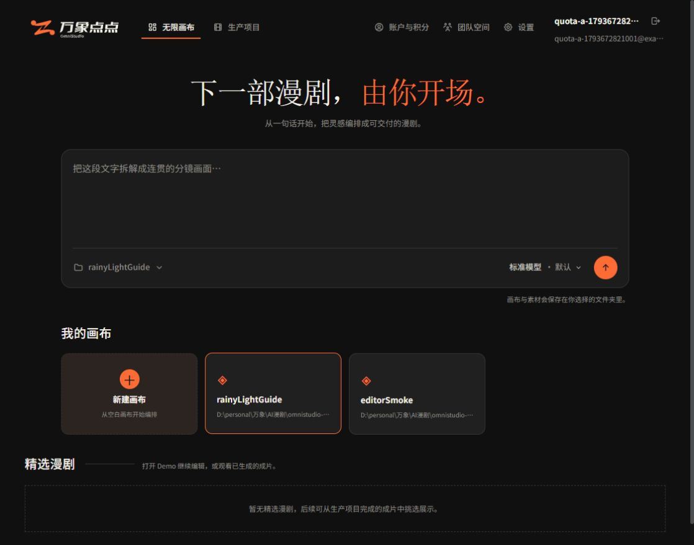
图 01 · 操作前的产品主页。“生产项目”位于顶部“无限画布”右侧；本图不代表已经进入生产项目。点击图片查看原图。
02进入创作工作台
确认创作模式，再建立独立项目
创作工作台提供“剧本创作、剧本改编、剧本制作、原片转绘”四个入口。本次采用原创故事，使用“剧本创作”。
- 操作入口
- 生产项目页 → 创作工作台“剧本创作”
- 本次选择
- 原创剧本创作；在下一步创建独立项目并设置预算。
- 点击或确认已选中“剧本创作”，选中项显示橙色背景。
- 确认页面下方可以看到“我的生产项目”及右侧“新建空白项目”入口。
- 本次先通过“新建空白项目”设置项目名称与预算，再在项目详情填写完整创作要求。
成功判断：“剧本创作”已选中，“新建空白项目”可用。图中首页默认值仍显示 05 集，实际项目在步骤 04 调整为 1 集。
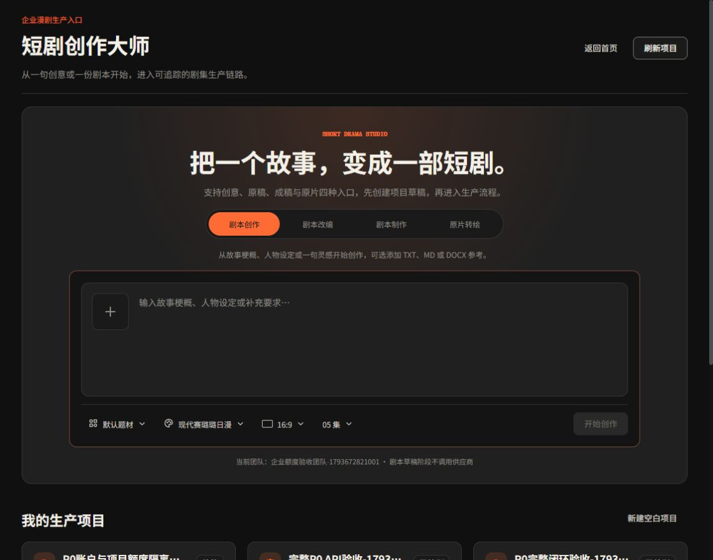
图 02 · 生产项目入口页。图中为未调整前的首页设置，最终 1 集规格见图 04。点击图片查看原图。
03创建项目与预算
建立独立生产项目
将本次演示建立为独立生产项目，后续剧集、资产、分镜与生成任务都归入该项目。
- 操作入口
- “我的生产项目”区域 → “新建空白项目”
- 项目名称
- 最后一封信 · 生产项目全流程手册
- 本次项目编号
1f43d00d-084d-4e41-a6c8-5ed77db77dcc（创建后由系统分配，无需手填）- 项目预算
- 500.00 积分。预算是额度设置，不等于已经消费。
- 点击“新建空白项目”，打开“新建生产项目”弹窗。
- 在“项目名称”填写上述名称；本次“客户 ID”留空。
- 将“项目预算（积分）”设为500，核对无误后点击“创建项目”。
- 进入新项目，核对名称和顶部预算为 500.00 积分，再继续创作。
成功判断：弹窗提交成功，新项目可以打开；项目详情中的名称、预算与本次填写一致。图 03 记录的是提交前表单。
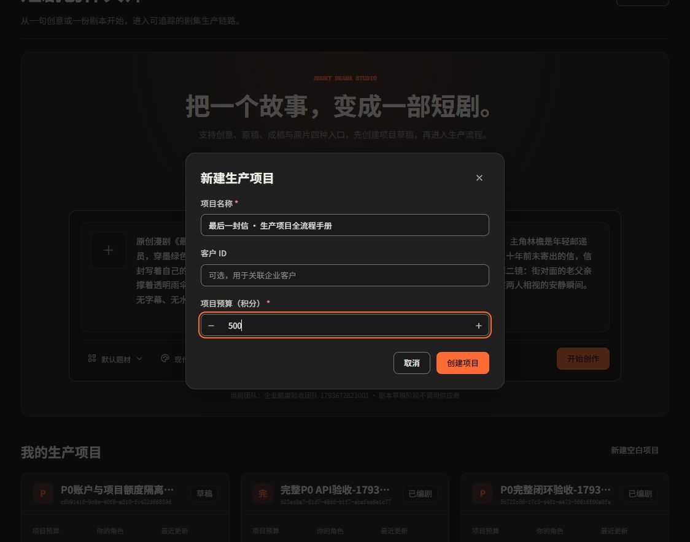
图 03 · 创建项目时填写名称并设置 500 积分预算。点击图片查看原图。
04填写创作要求并报价
写清 2 个镜头与 8 秒故事边界
在项目创作区填写完整创作要求，明确角色、场景、道具、镜头数量和结尾，避免模型扩大制作规模。本次没有上传参考附件。
- 操作入口
- 新项目 → 分镜剧集 / 剧本创作区 → “创作要求”
- 创作规格
- 风格：现代赛璐璐日漫；题材：都市爽文逆袭；画面比例：16:9 横屏；目标集数：1。
- 文本模型
- 标准模型 · 百炼模型。
- 页面预估
- 0.004886 积分，为该次提交前预估上限；不等于最终结算。
- 在“创作要求”输入下方完整故事要求；如自行改写，保留“两镜、各 4 秒、总 8 秒”的限制。
- 依次核对风格、题材、画面比例、目标集数与文本模型。
- 点击“获取费用预估”，等待确认按钮显示预估上限。
- 确认费用后点击“确认生成（预估上限 0.004886 积分）”，等待剧本草案返回；按钮金额以当次页面为准。
展开本次完整创作要求
原创漫剧《最后一封信》，仅制作1集8秒的教学短样片，严格2个镜头，每镜4秒，同一个雨夜邮局场景。现代赛璐璐动画，温暖电影感，16:9。林檐：年轻男性邮递员，黑色短发，墨绿色雨披，胸前橙色圆徽章。父亲：六十岁灰发男性，米色风衣，透明雨伞。剧情：第一镜林檐在邮局屋檐下打开一封旧信，从信中取出一颗红纸星星；第二镜他抬头，看到街对面父亲在暖黄路灯下撑伞等他，两人相视微笑。以相视作为完整结尾，叙事简单直观。无对白、无旁白、无画面文字、无水印。只建立2名角色、1个场景和1个道具红纸星星。每镜必须填角色名称与道具名称关联。不要额外人物或场景，不要扩写，整集8秒。
成功判断：页面显示可编辑的“模型生成草案”，并列出剧集、场景、镜头及资产数量。仅获得报价尚未生成，只有返回草案后才能进入步骤 05。
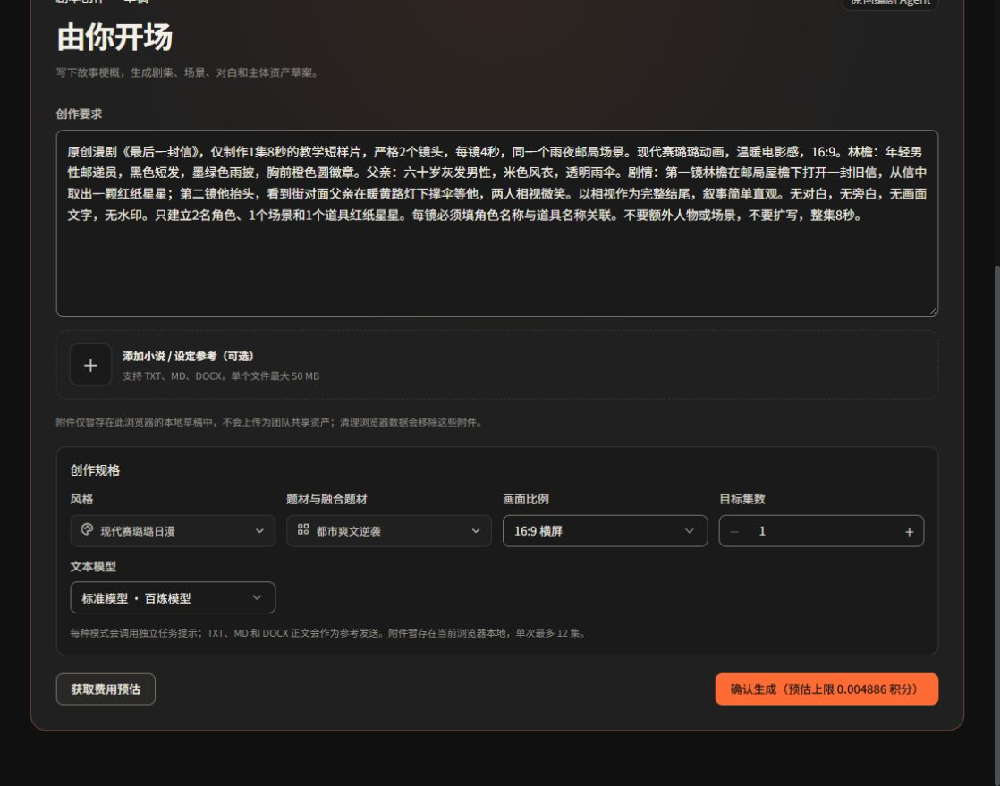
图 04 · 核对创作要求和提交前文本报价。点击图片查看原图。
05检查剧本草案
逐项审阅可编辑草案
草案返回后先检查文本与关联，再写入项目。图中第一镜为近景 4.00 秒，第二镜为中景 4.00 秒，人物与道具可在下拉框中核对。
- 操作入口
- 分镜剧集 → “模型生成草案 · 可编辑”
- 本次结构
- 1 集 · 1 场 · 2 镜 · 4 项资产；文本用量记录为 2,045 tokens，token 数不是积分。
- 检查重点
- 镜头一：林檐打开旧信取出红纸星星；镜头二：林檐抬头与父亲相视微笑；两镜同为雨夜邮局场景。
- 检查剧集标题、目标时长和场景连续性，确认没有新增人物或场景。
- 展开并核对两镜：每镜时长均为4.00 秒，景别依次为近景、中景。
- 核对角色关联：第一镜为“林檐”，第二镜为“林檐、父亲”；道具均关联“红纸星星”。
- 检查画面提示、光影/机位、音效；本故事无对白、无旁白，对应字段留空。
- 有偏差时先在草案中修改；审阅无误后，滚动到草案底部点击“确认并进入主体资产”。
成功判断：草案确认写入后切换到“主体资产”，显示 2 个角色、1 个场景、1 个道具。草案预览可编辑不等于已经确认入库。
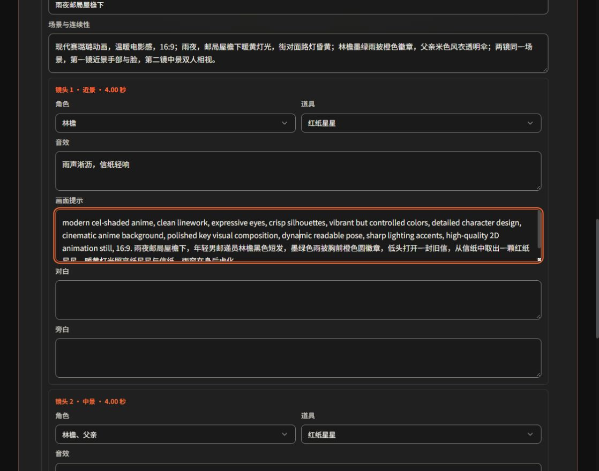
图 05 · 核对剧本草案及生成结构。点击图片查看原图。
06确认剧集与文字资产
核对 4 项资产已写入，区分文字与图片状态
主体资产是后续镜头引用的一致性资料。文字设定保存后可以继续整理分镜；图片生成是独立操作，进入分镜并不代表已满足视频生成条件。
- 操作入口
- 项目顶部步骤“02 主体资产”
- 项目内容
- 角色：林檐、父亲；场景：雨夜邮局；道具：红纸星星。
- 图中状态
- 角色卡片显示“未生成 / 待生成”，文字已保存，参考图尚未生成。
- 确认顶部计数为2 角色、1 场景、1 道具。
- 分别点击“角色”“场景”“道具”页签，检查 4 项资产名称和视觉设定；需要修正文案时点击对应卡片的“编辑”。
- 点击卡片主体可打开“主体资产参考图”详情，图片生成操作见步骤 07；点击“编辑”处理的是资产设定。
- 本手册推荐先执行步骤 07–12，准备齐两镜用到的 4 项参考图，再点击“下一步：分镜脚本”。文字资料完整时也允许先进入分镜整理，但视频报价与提交仍检查图片状态。
成功判断：4 项资产都有对应文字设定，名称与剧本一致。此时仅完成文字资料准备；参考图是否完成，须分别查看“已生成 / 已保存”和实际图片。
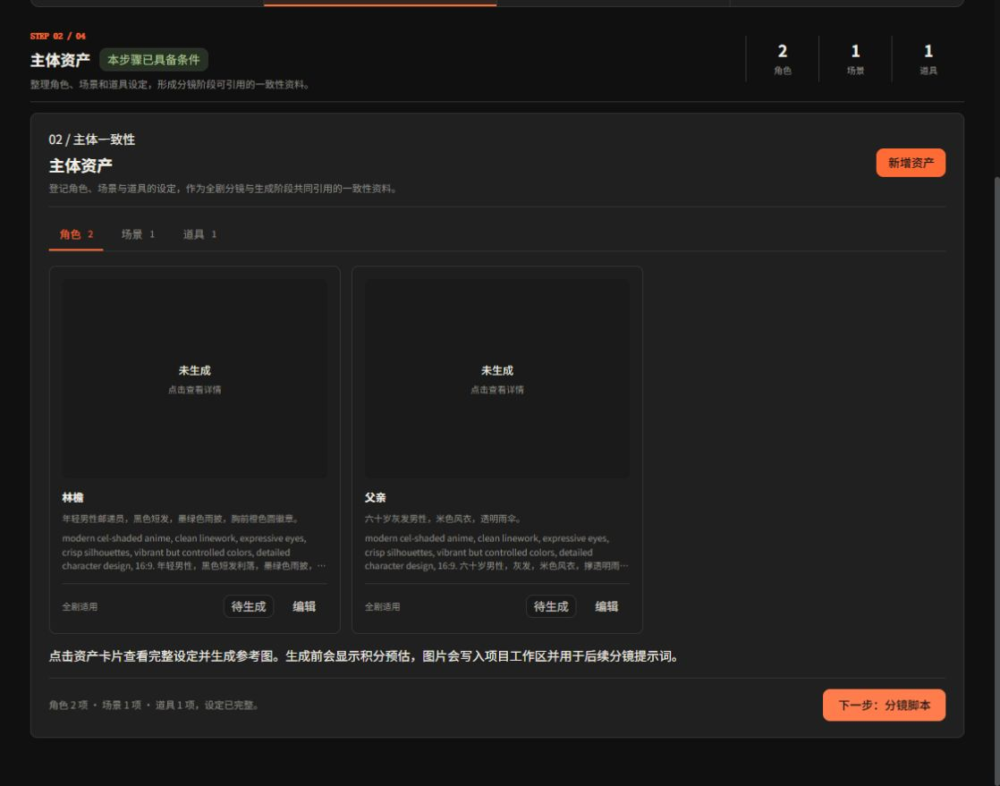
图 06 · 文字设定已写入项目，参考图状态另行核验。点击图片查看原图。
02 / 制作并核对主体参考图
步骤 07–12 · 每项资产独立报价、生成并检查保存状态
07查看主体参考图报价
打开林檐详情，确认单张 3 积分报价
回到“主体资产”，点击林檐卡片主体打开生成面板。面板会显示资产设定、最终提示词、图片模型、尺寸与参考图预览。
- 操作入口
- “02 主体资产” → “角色” → 点击“林檐”卡片 → 向下滚动到生成设置
- 模型 / 尺寸
- GPT Image 2 · OpenHeap 图片；1K · 标准。
- 补充提示词
- 生成一张用于漫剧全片一致性参考的主体设定图，主体清晰完整，背景简洁，避免文字和水印。
- 单张预估
- 3.000000 积分；最终扣款以对应任务流水为准。
- 核对“主体类型”为角色、“主体名称”为林檐，以及黑色短发、墨绿色雨披、橙色圆徽章等特征。
- 选择上述图片模型和尺寸，确认“生成补充提示词”内容。
- 点击“获取积分预估”；获得报价后按钮变为“重新获取预估”。
- 确认页面出现“预计消耗 3.000000 积分”后，点击“确认生成参考图”，等待图片任务结束。
成功判断：报价先展示，点击确认后才提交图片任务。生成期间等待状态变化，完成后继续步骤 08 检查保存与画面。
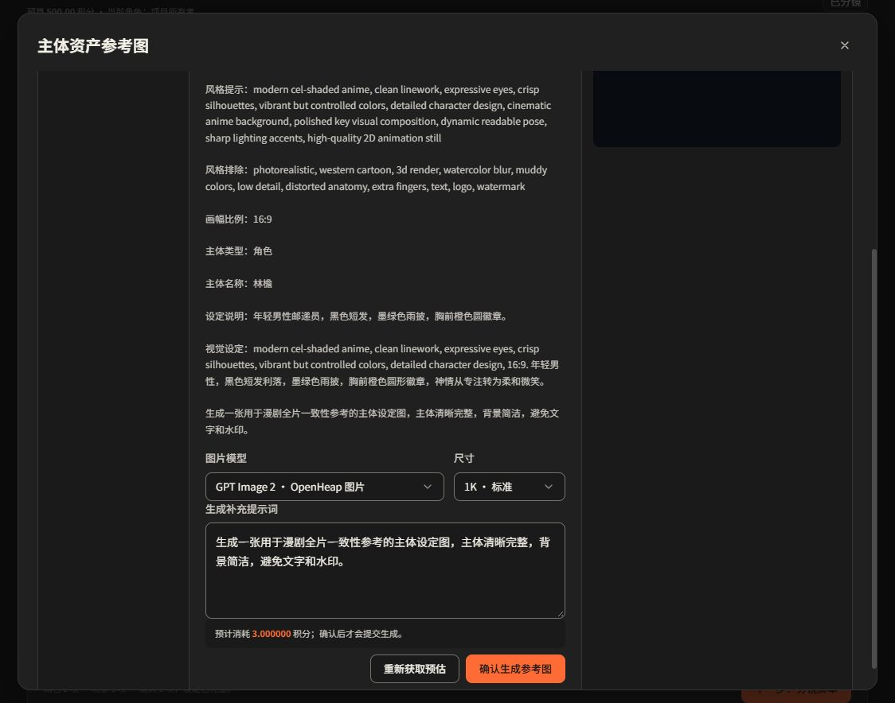
图 07 · 查看单张参考图报价后再决定提交。点击图片查看原图。
08确认首张角色图结果
检查“第 1 版参考图”和“已保存”
任务完成后，林檐资产出现缩略图，右侧显示参考图与“已保存”。本次结果是角色设定图，包含正背面和面部变化，供视频保持人物外观一致。
- 操作入口
- “主体资产参考图”弹窗 → 左侧“林檐” → 右侧“参考图预览”
- 本步结果
- 角色 · 第 1 版参考图；右上角“已保存”；下方显示项目工作区素材路径。
- 确认左侧当前选中的是“林檐”，资产缩略图已出现。
- 检查右侧图片：黑色短发、墨绿色雨披和胸前橙色圆徽章与设定一致，无错误角色或明显生成缺陷。
- 核对右上角“已保存”与参考图版本；仅图片出现但任务仍未结束时，不急于切换生成流程。
- 保留满意结果；如需重做，重新核对报价后再点击“确认重新生成”，本轮没有为林檐重复生成。
成功判断：林檐第 1 版参考图已保存且可查看。该结果只证明这一项资产完成，其他被镜头引用的资产仍须逐项核对。
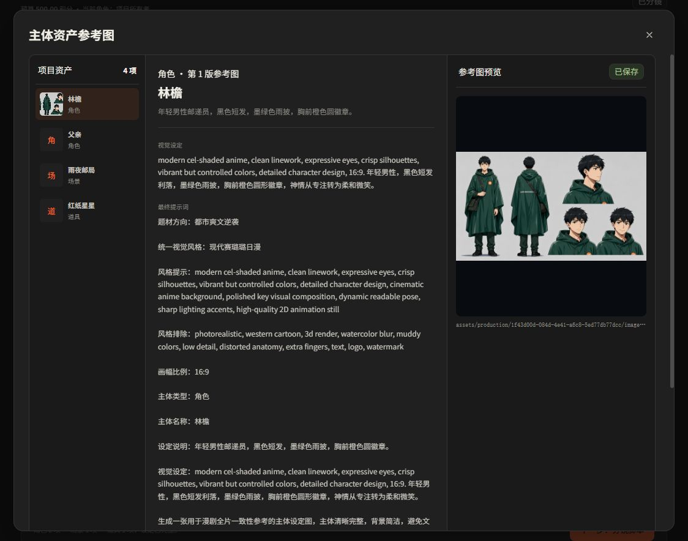
图 08 · 林檐角色参考图实际成功，右侧为保存后的预览。点击图片查看原图。
09生成父亲角色参考图
切换资产后重新检查主体与报价
在同一弹窗左侧点击“父亲”，为第二镜需要的角色建立参考图。切换资产后，应检查主体名称，避免将上一项资产的生成操作重复提交。
- 操作入口
- “主体资产参考图”弹窗 → 左侧“父亲”
- 视觉重点
- 六十岁灰发男性、米色风衣、透明雨伞，站在暖黄路灯下，目光温和。
- 本步结果
- 父亲 · 第 1 版参考图；右侧“已保存”，左侧缩略图已出现。
- 点击左侧“父亲”，核对中间标题与主体类型已经切换为父亲 / 角色。
- 核对视觉设定，滚动到图片设置，沿用步骤 07 的 GPT Image 2、1K 参数和主体设定图补充要求。
- 点击“获取积分预估”；仅在本项报价明确且预算可用时，点击“确认生成参考图”。
- 等待完成后检查人物灰发、米色风衣和透明雨伞，确认画风与林檐接近，并核对“已保存”。
成功判断：左侧父亲资产显示缩略图，右侧第 1 版参考图已保存。图 09 支持结果确认；提交前的父亲独立报价未在本图展示。
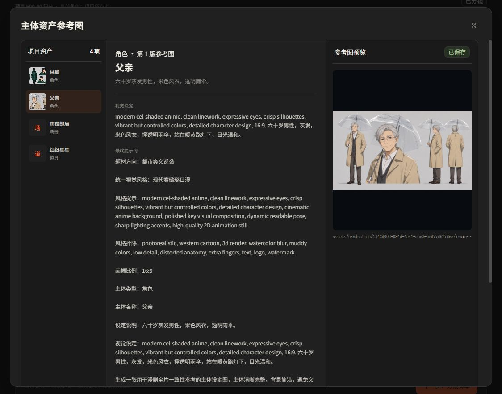
图 09 · 父亲角色参考图实际成功：资产名称、缩略图和右侧“已保存”状态一致。点击图片查看原图。
10生成雨夜邮局场景参考图
保持雨夜与冷暖灯光连续性
再切换到“雨夜邮局”场景，检查视觉设定后生成场景参考图。图中的邮局与街道空间为后续镜头提供统一环境参考。
- 操作入口
- “主体资产参考图”弹窗 → 左侧“雨夜邮局”
- 视觉重点
- 夜晚邮局屋檐下与街对面路灯、雨丝、湿润地面反光、温暖灯光。
- 本步结果
- 场景 · 第 1 版参考图；右侧“已保存”；林檐、父亲、雨夜邮局三项都有缩略图。
- 点击左侧“雨夜邮局”，确认主体类型为“场景”，不是角色或道具。
- 检查邮局屋檐、暖黄灯光、夜雨和街道反光等设定，滚动到图片模型和尺寸设置。
- 核对 GPT Image 2、1K 参数，重新获取当前场景的积分预估，确认后提交生成。
- 任务完成后检查右侧场景图与“已保存”；核对没有混入人物设定图或其他资产。
- 接下来还需处理红纸星星道具；当前截图中该项仍显示“道”占位，不能据前三项成功推断全部素材已齐备。
成功判断：雨夜邮局第 1 版场景图已保存，项目已有两张角色图与一张场景图。继续步骤 11 处理镜头使用的红纸星星道具。
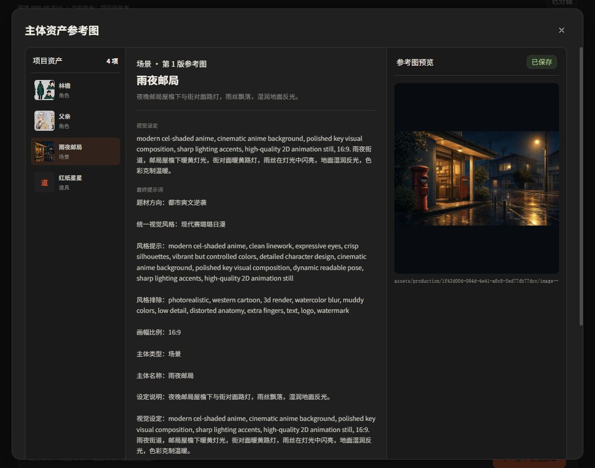
图 10 · 雨夜邮局场景图实际成功。左侧红纸星星仍无缩略图，本图不证明道具生成完成。点击图片查看原图。
11生成并确认红纸星星道具图
先核对 3 积分报价，再检查道具生成结果
红纸星星是两镜关联的道具。本次在重新获得可用报价后提交图片任务，完成后道具卡片显示红纸星星缩略图与“已生成”。
- 操作入口
- “02 主体资产” → “道具” → 点击“红纸星星” → 图片生成设置
- 本次模型 / 报价
- GPT Image 2 · OpenHeap 图片；1K · 标准；预计消耗 3.000000 积分。
- 视觉重点
- 红色手工折纸星星，立体棱角分明，边缘略旧，背景简洁。
- 打开红纸星星资产，核对主体名称与视觉设定；不要在前一项场景详情里误点重新生成。
- 选择 GPT Image 2、1K，点击“获取积分预估”，确认本项报价为 3.000000 积分。
- 点击“确认生成参考图”并等待任务结束。看到报价或开始加载时不能计作成功。
- 关闭弹窗回到“道具”页签，确认卡片出现红纸星星图片与“已生成”。
- 检查图片外观与剧情一致，接着核对整个项目的资产是否全部齐备。
成功判断：图 11A 为提交前真实报价，图 11B 为任务完成后的红纸星星卡片；本次四项参考图均已实际成功。
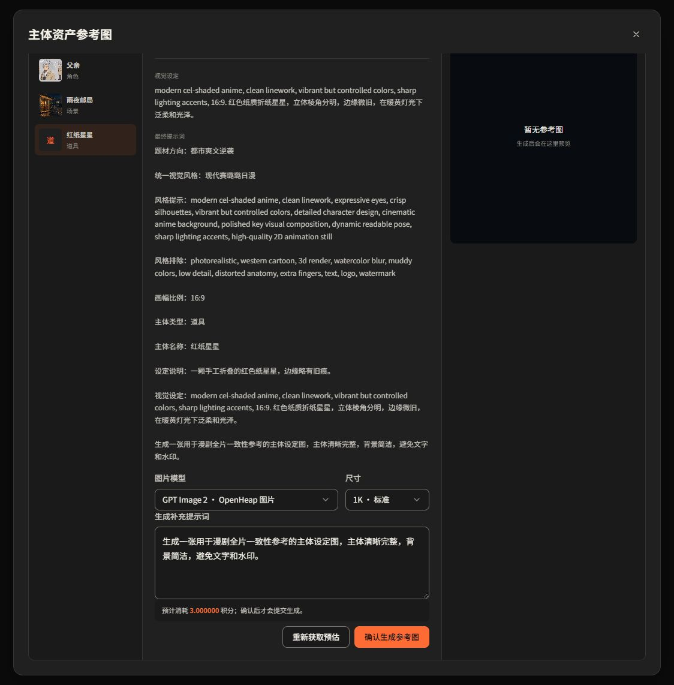
图 11A · 红纸星星的真实提交前报价，右侧此时尚无参考图。
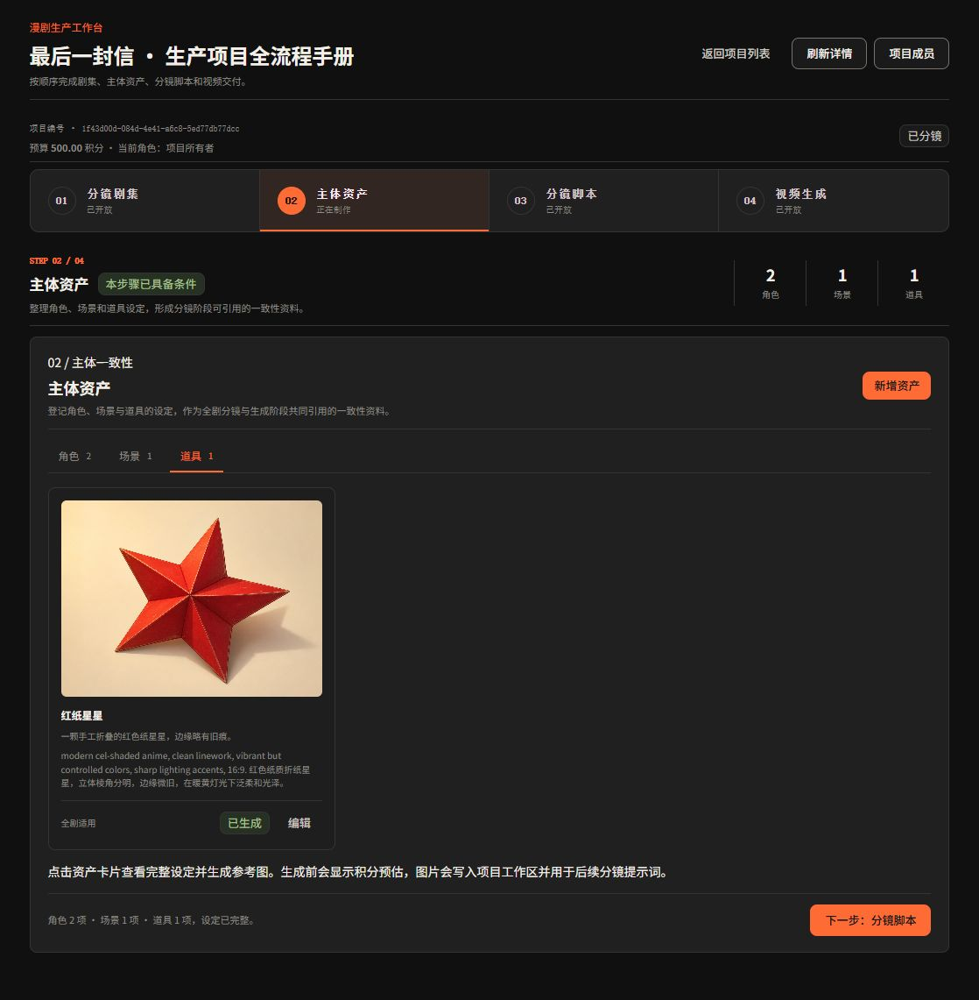
图 11B · 红纸星星道具图实际生成成功，卡片显示“已生成”。点击图片查看原图。
12核对四项资产已就绪
从视频工作区检查缩略图与缺图提示
生成完成后，打开“04 视频生成”检查当前镜头所需素材。图中左侧四项都有缩略图，缺失参考图提示已消失，底部显示“请先获取当前参数报价”。
- 操作入口
- 项目顶部“04 视频生成” → “生成” → 第 1 集
- 本次四项
- 林檐、父亲、雨夜邮局、红纸星星。
- 放行含义
- 参考图条件满足，可获取当前镜头的视频报价；此时尚无生成视频。
- 确认左侧“角色”下林檐、父亲均有图片。
- 确认“场景”的雨夜邮局与“道具”的红纸星星均有图片。
- 选择当前镜头，确认提示词框中不再出现“请先生成镜头关联参考图”的缺失提示。
- 确认底部“估算积分”已可点击，但先到步骤 13 再核对分镜与当前镜头参数。
成功判断：四项缩略图可见，缺图提示解除，估算积分可用。参考图检查以当前镜头关联和 @ 引用项为准，无关资产不构成视频门槛。
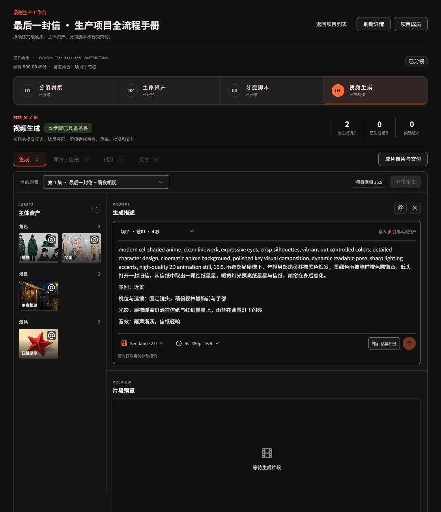
图 12 · 四图实际齐备后的工作区，当前没有视频结果；底部要求先获取参数报价。点击图片查看原图。
03 / 确认分镜与视频生成
步骤 13–25 · 分镜、@ 引用、参数、两镜任务与审片
13检查分镜脚本
核对两镜各 4 秒，确认后进入视频生成
分镜表是视频生成的镜头清单。推荐先准备齐镜头所需角色、场景和道具参考图，再核对并确认分镜。文字资产与分镜也可提前整理保存；确认分镜本身不会提交付费视频任务。表格超出可视宽度时，使用底部横向滚动条查看右侧字段。
- 操作入口
- 项目顶部“03 分镜脚本” → 左侧第 1 集
- 本次内容
- 《最后一封信 · 雨夜相视》；1 场、2 镜；近景 4.00 秒、中景 4.00 秒，总目标 8 秒。
- 阶段含义
- 确认分镜保存制作结构，不会直接提交付费视频任务。
- 选择左侧第 1 集，确认右上角统计显示2 个镜头、1 个场景。
- 检查“时长（秒）”列，两行均为4.00；确认顶部“目标时长”为8 秒。
- 横向滚动表格，核对角色、场景、道具、画面描述、光影/机位及声音信息，确保与步骤 05 一致。
- 点击“确认分镜并进入视频生成”，等待工作区切换到第四步。
成功判断：视频生成阶段打开，当前剧集仍为第 1 集。参考图不完整时可以整理提示词，但视频报价和生成仍会被拦截，见步骤 15。
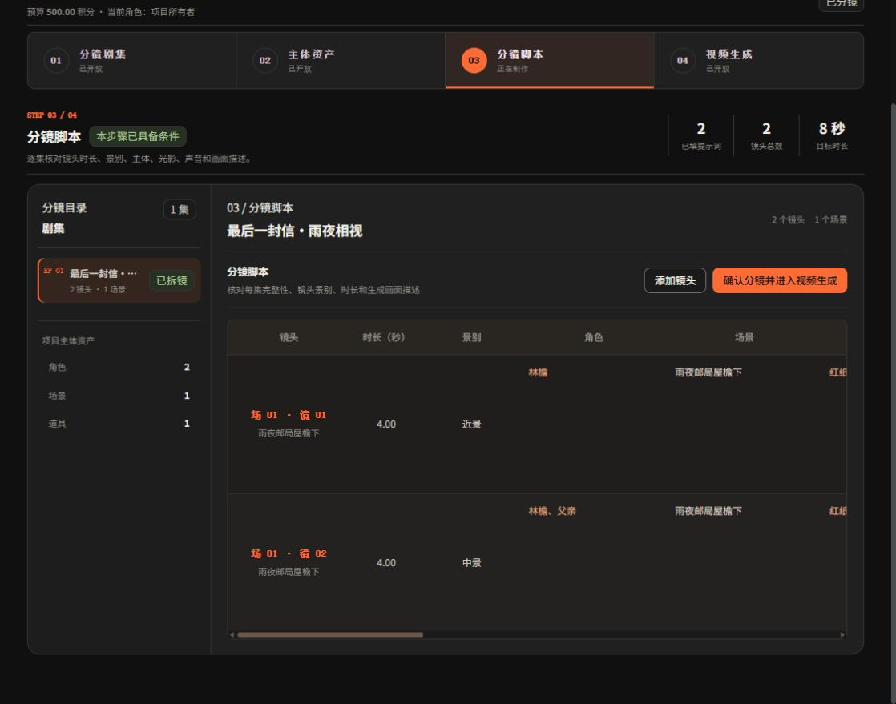
图 13 · 使用本轮补拍的当前分镜页面：两镜各 4.00 秒、目标 8 秒。图中“已开放”表示步骤可进入，视频提交还需检查关联参考图。点击图片查看原图。
14在提示词中引用主体资产
使用 @ 选择素材，并确认缩略图进入提示词
视频生成工作区把可引用资产显示在左侧。资产引用会以带名称和缩略图的标签插入提示词；镜头已关联的资产仍会自动检查。图 14 拍摄于道具图完成前，用于说明 @ 引用与缺图提示；四图完成后的首镜报价见步骤 16。
- 操作入口
- “04 视频生成” → “生成” → 选择第 1 集与镜头 01 → 提示词框右上角 @
- 本图引用
- 场景“雨夜邮局”，提示词中的缩略图引用为
@雨夜邮局。 - 仍缺素材
- 红纸星星参考图；提示词区提示需要先生成镜头关联参考图。
- 在“当前剧集”选择第 1 集，在提示词框镜头选择器选场01 · 镜01 · 4秒。
- 将光标放入提示词需要引用的位置，点击提示词框右上角@，或通过左侧资产卡片的 @ 控件选择素材。
- 选择“雨夜邮局”，确认提示词内出现带缩略图的 @雨夜邮局 标签。
- 读取下方缺失素材提示。@ 引用增加本次提示词素材，不会移除分镜原有角色和道具关联。
- 当前镜头关联及 @ 引用的资产都必须有成功参考图，才能获取视频报价和提交；普通文字名称不等同于素材引用。
成功判断：提示词中显示带图引用标签。图 14 的拍摄时点红纸星星图尚未完成，因此当时的报价 / 提交仍被禁用；该项后来已在步骤 11 实际生成。
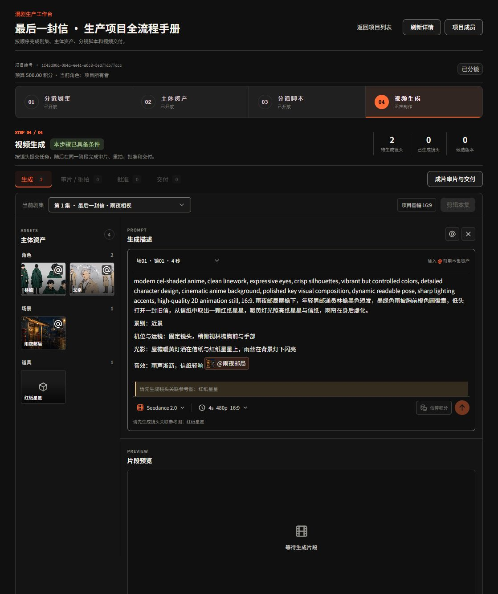
图 14 · @雨夜邮局已插入，提示词中可见缩略图；红纸星星仍缺图。此截图不代表视频已报价或提交。点击图片查看原图。
15设置视频参数并检查提交门槛
选择 4 秒、480p、16:9 与同步生成音频
参数面板展示本次镜头期望配置。选择参数不是报价或提交动作；素材不齐时，积分估算与提交按钮仍会禁用。
- 操作入口
- 生成提示词框 → 底部时长 / 分辨率控件
- 本次参数
- Seedance 2.0；4 秒；480p；项目画幅 16:9；勾选“同步生成音频”。
- 截图时点
- 拍摄于道具生成前，当时红纸星星参考图缺失，视频任务未提交；四图就绪后的报价见步骤 16。
- 点击底部参数控件，选择时长4s。
- 选择480p，确认项目画幅为16:9。
- 勾选“同步生成音频”，本次镜头希望保留雨声与信纸轻响。
- 查看参数菜单和提示词框下方的缺失素材提示。缺图时应返回“02 主体资产”补图，不要将按钮禁用误判为任务已开始。
- 补齐镜头关联及 @ 引用所需的资产图后，重新打开镜头核对提示词、参数，再获取报价；实际提交与生成结果待对应任务截图补充。
参数核对：本次使用 4 秒 / 480p / 16:9 / 同步生成音频。图 15 拍摄于道具图完成前，记录了缺图时估算与提交禁用的行为；四图就绪后的实际报价见步骤 16。
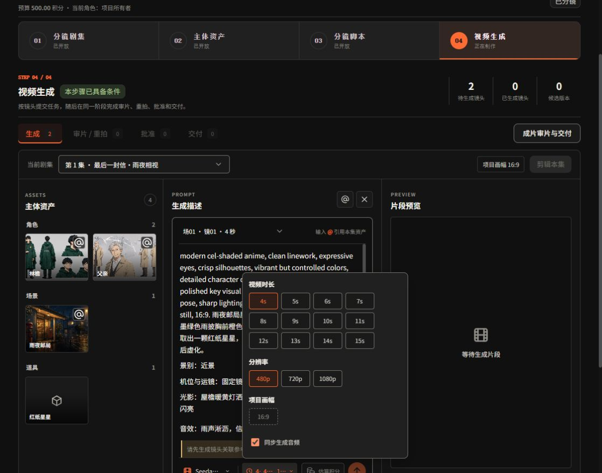
图 15 · 视频参数已选择；该早期截图仍处于补道具图前，参数选择不代表视频已提交。点击图片查看原图。
16获取首镜报价并提交视频任务
确认 72.00 积分后点击橙色生成箭头
本次首镜使用两项镜头关联图片：林檐角色、红纸星星道具；再通过 @ 手动引用雨夜邮局场景，共使用 3 张参考图。父亲属于第二镜，不作为第一镜的自动角色引用。
- 操作入口
- 视频生成 → 第 1 集 → 场01 · 镜01 · 4秒 → 底部“估算积分”
- 本次参数
- Seedance 2.0 · 4 秒 · 480p · 16:9 · 同步生成音频。
- 本次报价
- 72.00 积分；此数值是当前请求报价，不等同于最终结算。
- 任务结果
- 任务
9293dc2f… 成功并结算 72 积分；视频文件 assets/generated/video3d600e1e-9122-4199-bcd2-43cf0c6fa47c.mp4。
- 确认当前镜头为镜01，核对画面描述、雨声/信纸音效和 @雨夜邮局缩略图引用。
- 再次核对时长、分辨率、画幅与同步音频选项；若有改动，重新获取报价。
- 点击“估算积分”，等待按钮显示本次72.00。
- 确认预算可用后，点击右侧橙色向上箭头提交视频任务。
- 等待任务结束，再检查下方候选片段卡片与视频预览。运行中不反复提交，未收到结果前不计作视频成功。
成功判断：下方生成结果出现视频候选，候选状态为待审片；之后到“审片 / 重拍”检查播放并决定是否批准或退回。
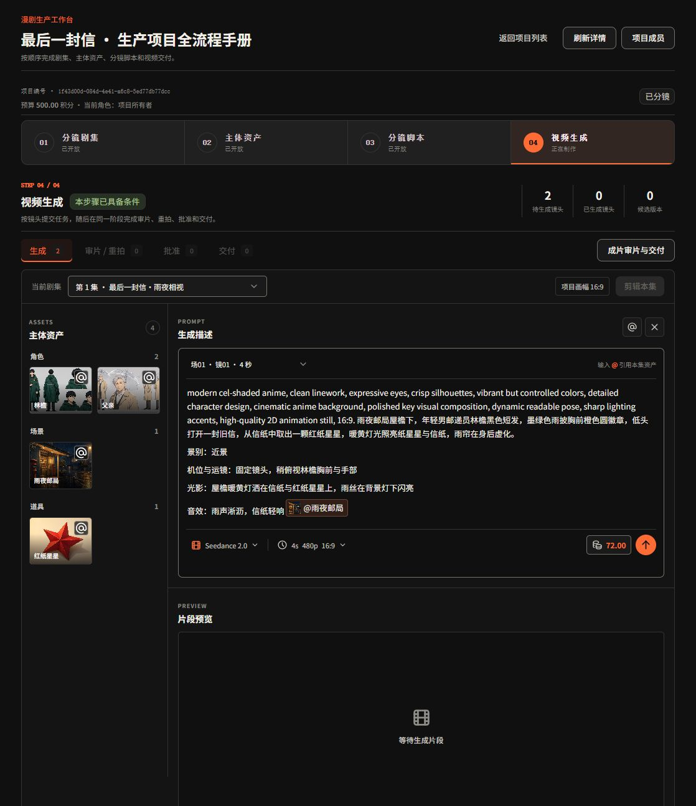
图 16A · 首镜实际报价 72.00 积分，参考图门槛已解除；该报价截图是提交前证据。点击图片查看原图。
17预览首镜生成结果
确认视频候选出现并实际播放检查
任务完成后，工作区显示 1 个已生成镜头和 1 个候选版本，预览可以播放到 4 秒结尾。候选生成成功不等同于已批准，也不表示整镜完全符合剧本。
- 操作入口
- “04 视频生成” → “生成” → 镜头 01 → 下方“片段预览 / 生成结果候选片段”
- 本次文件
assets/generated/video3d600e1e-9122-4199-bcd2-43cf0c6fa47c.mp4；H.264 + AAC，视频 864×496、24 fps，媒体时长约 4.096 秒。- 页面状态
- 候选 1 · 待审片；可从播放器查看 0:00–0:04。
- 等待任务从运行状态结束；确认生成列表出现“视频”候选卡片和播放预览。
- 播放整段，查看人物外观、镜头动作、场景和声音；拖动播放器进度条检查关键动作。
- 检查预览没有黑屏或无法解码；有不符合项时先记录发生的时间段，不要只凭首帧批准整段。
- 点击候选片段进入审片流程；镜头是否批准，由审片和后续剪辑决定。
成功判断：播放器实际播放到 0:04，候选文件可读，页面标记“待审片”。该状态是生成成功、尚未审片的中间状态。
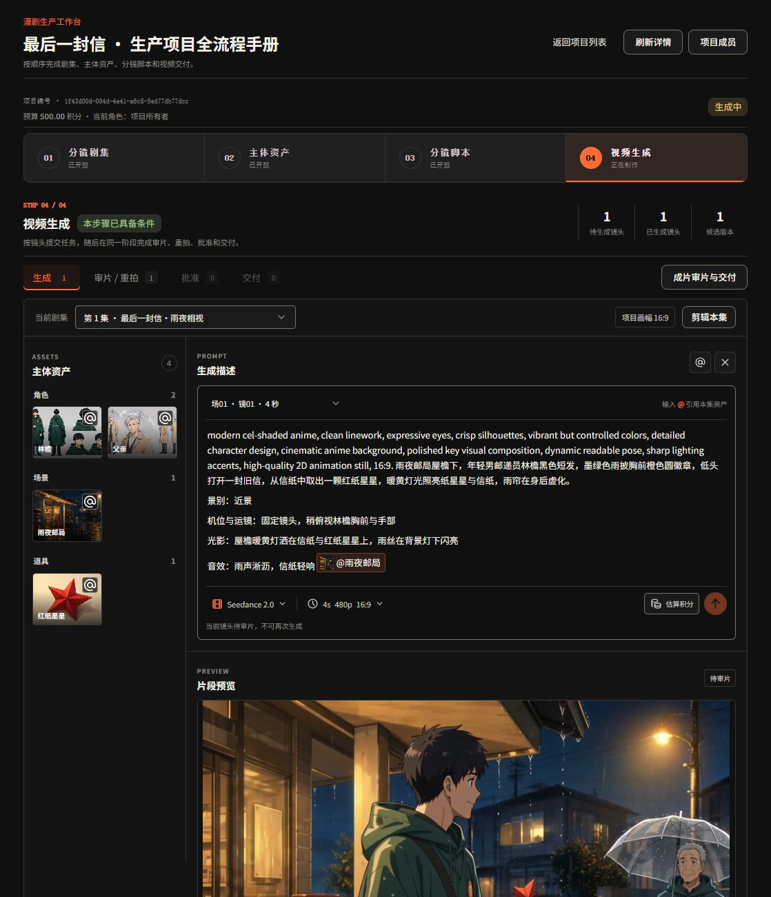
图 17 · 首镜生成后的工作区与候选视频预览。可见成片关键画面；生成成功后仍需审片。点击图片查看原图。
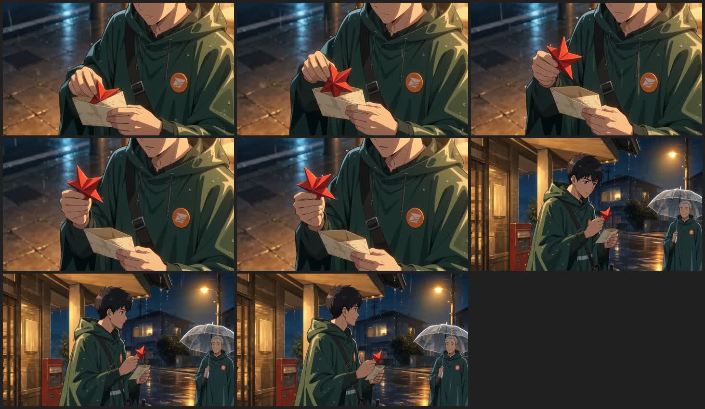
图 17A · 辅助质检图：从源 MP4 使用 FFmpeg 抽取的帧接触表，不是应用截图。首段约 0–2.4/2.5 秒表现拆信取星动作；后段模型切成双人画面，老人出现绿色雨披，和父亲米色风衣设定不符。
18填写审片意见并批准候选
批准可用素材，记录需要在剪辑中裁掉的部分
本次审片弹窗记录了对候选的肯定意见，提交后候选状态变为 approved。后续源视频技术复核发现，动作在中段后偏离设定：父亲误穿绿色雨披，因此批准状态仅记录流程动作，不能替代成片级内容验收。
- 操作入口
- “04 视频生成” → “审片 / 重拍” → 选择镜头 01 候选 → 点击候选卡片审片
- 本次审片意见
- “人物服饰与胸前橙色徽章符合设定；镜头表现了拆信取出红纸星星的动作，暖黄灯光与雨夜环境连续，首轮审片通过。”
- 最终技术复核
- 约 0–2.4/2.5 秒的拆信取星段可用；后段模型自行切换为双人画面，老人穿绿色雨披，与父亲米色风衣不符。
- 选择候选卡片，检查播放器和已有的镜头描述。
- 在意见框写明本次检查依据。提交前区分“画面片段已生成”与“全镜头内容完全符合”。
- 点击“批准候选”，在批准列表确认状态更新为 approved。
- 后续剪辑只将源片段约 0–2.4/2.5 秒放入时间线，裁掉服装错误及意外切换段；最终片长由剪辑和第二镜结果决定，不等于原分镜目标 8 秒。
状态说明：系统已保存本次批准和一条意见；技术抽帧复核仍发现后段服装不符。操作指南保留这段真实差异，剪辑时需裁掉不合规部分，不能将整段描述成通过内容验收。
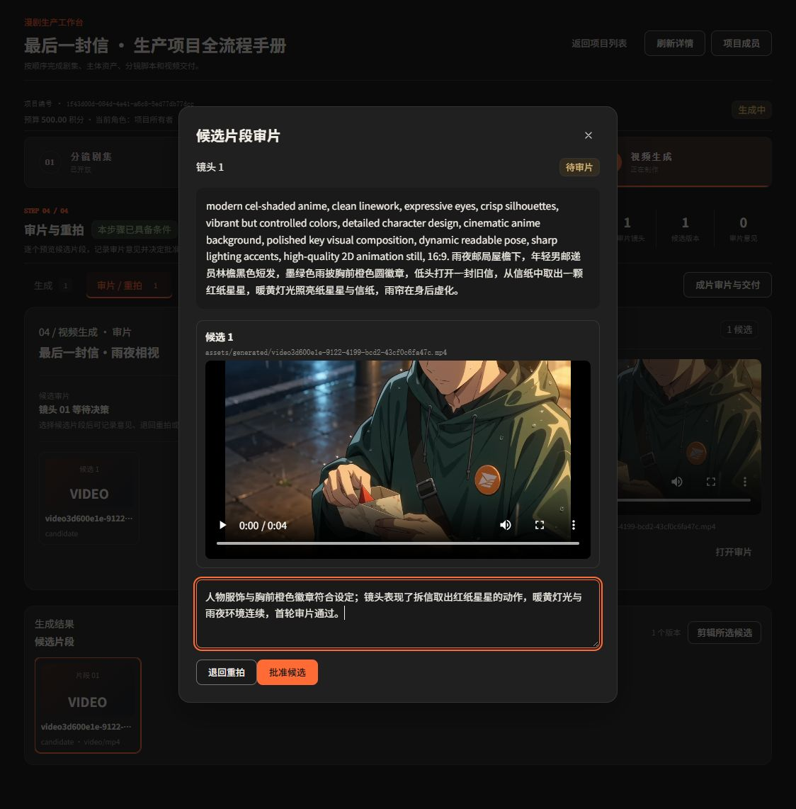
图 18A · 审片弹窗展示候选文件、人工意见输入框和“批准候选”操作。该意见是当时人工记录。
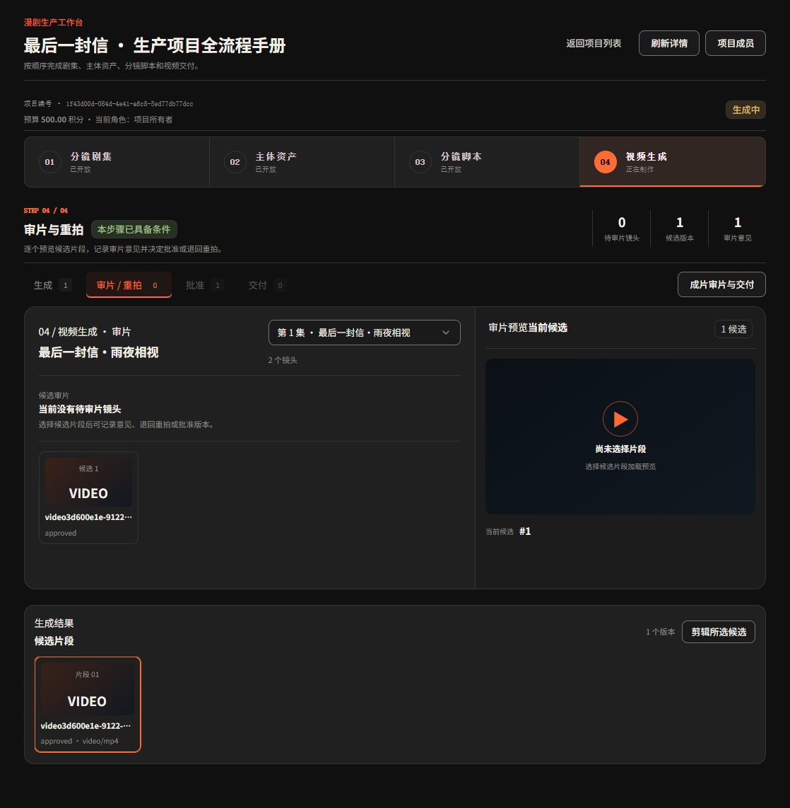
图 18B · 候选列表显示 approved 和 1 条审片意见；批准状态不抹去后续发现的内容偏差。
19核对第二镜首版报价并提交 V01
选择镜头 02，使用相同规格前先重取报价
第二镜拍摄林檐抬头，与撑透明雨伞的父亲相视。切换镜头后提示词和人物关联会更新；虽然本次得到相同报价，仍需按当前镜头单独估价。
- 操作入口
- “04 视频生成” → “生成” → 提示词框镜头选择器选“场01 · 镜02 · 4秒”
- 首版参数 / 报价
- Seedance 2.0 · 4 秒 · 480p · 16:9 · 同步生成音频；报价 72.00 积分。
- 人物与素材
- 镜头描述包含林檐、父亲和 @雨夜邮局；角色图和场景图缩略图可见。
- 版本结果
- V01 后续生成成功但经审片退回；72 积分已结算。重拍 V02 单独报价与结算，见步骤 22。
- 在镜头选择器中选场01 · 镜02 · 4秒，检查第二镜提示词确实是林檐抬头、父亲撑伞等在街对面，两人相视微笑。
- 确认左侧四项资产缩略图齐备；检查提示词内的 @雨夜邮局缩略图引用。
- 核对 Seedance 2.0、4 秒、480p、项目画幅 16:9 和同步生成音频已开启。
- 点击“估算积分”，确认本镜报价 72.00 积分；不要沿用上一镜报价而跳过本步。
- 检查预算和余额后，点击橙色向上箭头提交；等待任务完成，不重复提交。
V01 已提交并生成，随后被审片退回，见步骤 20–21。退回不删除旧版本；重拍会产生新的生成任务和费用。
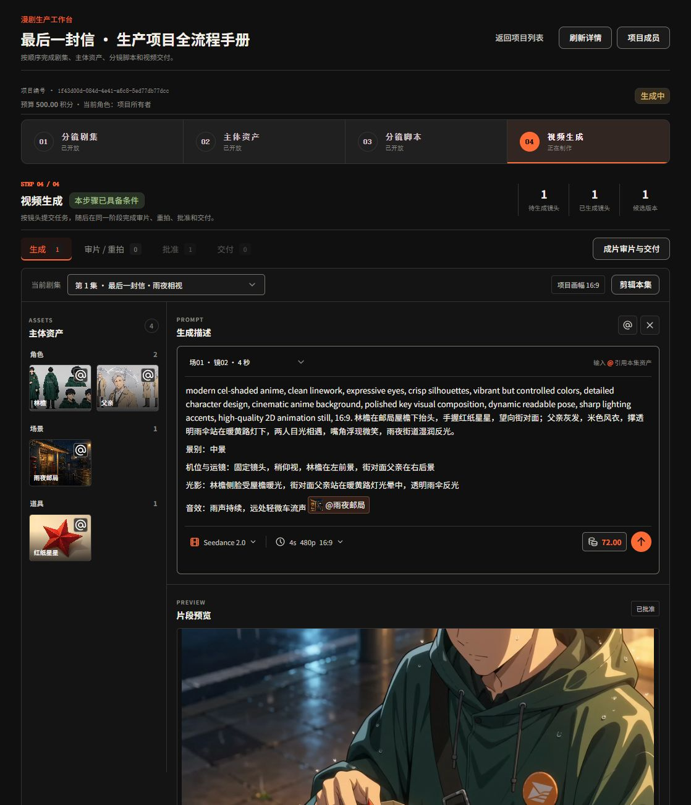
图 19 · 第二镜 V01 单独估价为 72.00 积分并提交。该版本后来因画面转入室内而退回，步骤 20–25 记录其复核与重拍。点击图片查看原图。
20预览第二镜 V01 并检查连续画面
生成后播放完整 4 秒，再逐段检查场景
第二镜 V01 生成成功后出现在待审片列表。不能只看一帧，需要完整播放并检查背景是否一直保持邮局屋檐外的雨夜街道。
- 操作入口
- “04 视频生成” → “审片 / 重拍” → 选择镜头 02 的候选 1
- 本图状态
- 候选 1 · 待审片；镜头 02 的 V01 已生成。
- 检查重点
- 林檐抬头、父亲撑伞、红纸星星、外景连续性和人物服装。
- 选择第二镜候选卡片，在审片弹窗中播放 0:00–0:04。
- 观察角色动作、服装和背景是否与提示词及分镜一致。
- 必要时用播放器进度条复查关键时间点；不因视频文件可播放就直接批准。
- 发现错误时点击候选卡片审片，写明问题与期望修正，提交“退回重拍”。
本次结果：V01 可播放，但前半段转入室内场景，与邮局屋檐外雨夜不符；因此未用作成片版本，退回时保留 V01 记录。
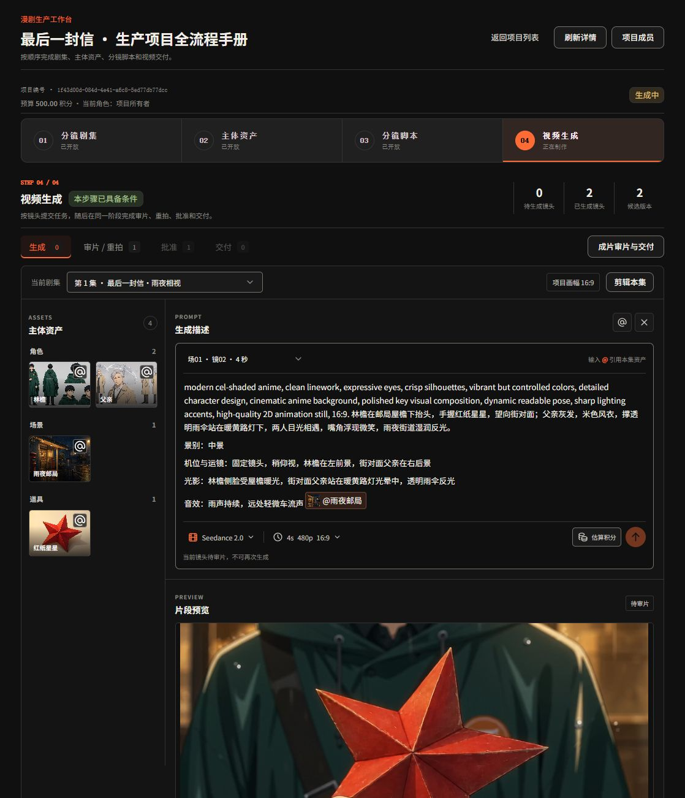
图 20 · 第二镜 V01 生成后的候选预览；当前候选状态为“待审片”。点击图片查看原图。
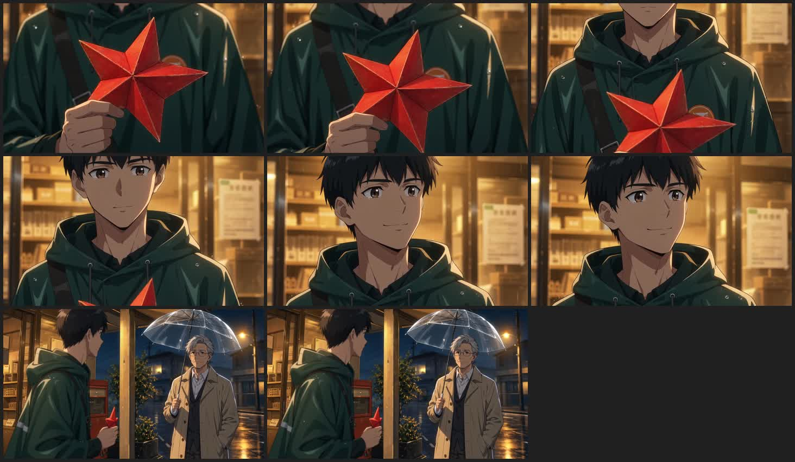
图 20A · 辅助质检图：从 V01 视频用 FFmpeg 抽帧组成的接触表，不是应用截图。抽帧显示前半段转成室内背景，与分镜指定的邮局外雨夜不一致。
21记录审片意见并退回 V01
指出场景偏差，保留失败版本供追溯
V01 审片意见明确前半段转为室内场景。提交“退回重拍”后，候选状态变为 changesRequested，V01 仍保留在候选列表，不被覆盖。
- 操作入口
- “04 视频生成” → “审片 / 重拍” → 镜头 02 → 选择候选 1
- 本次意见要点
- 全段固定在邮局屋檐与街道；父亲只在街对面暖黄路灯下；米色风衣和透明雨伞；全程保持同一外景，不切换室内、不增加人物或场景。
- 退回结果
- V01 状态为 changesRequested；批准候选数仍是 1（首镜）。
- 在审片窗口播放器确认当前选中的是镜头 02 的候选 1 / V01。
- 在意见框写明具体时间段问题、期望镜头空间和需要保持的角色外观。
- 点击“退回重拍”，等待项目刷新。
- 在候选列表确认 V01 状态显示 changesRequested / 需重拍，并保留其候选记录。
- 返回“生成”页编辑同一镜头提示词，创建 V02；不要误以为退回已删除或修改了 V01 文件。
成功判断：第二镜 V01 被标记为需重拍，审片意见已保存，V01 仍可查看；该版本不作为第二镜批准素材。
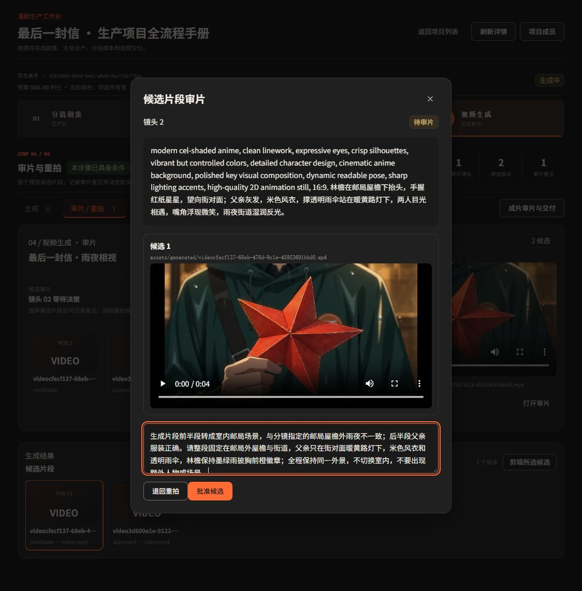
图 21A · V01 审片意见弹窗：指出室内场景偏差并填写外景连续性要求；点击“退回重拍”前的记录。
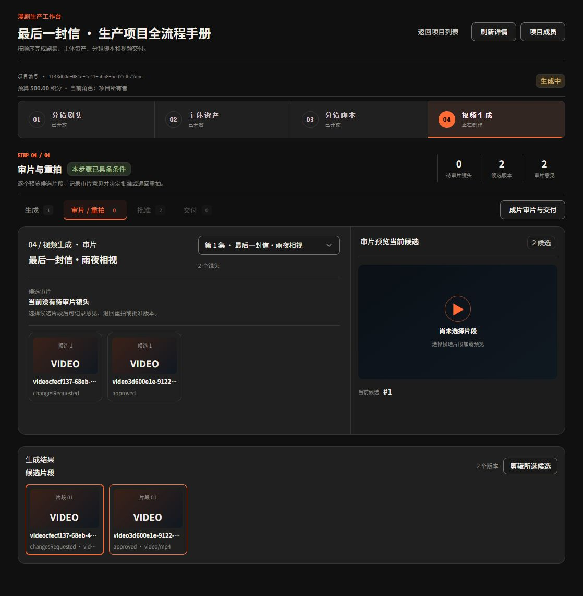
图 21B · 提交意见后 V01 保留并显示 changesRequested；首镜已批准候选仍在列表中。
22按意见重写提示词并提交 V02
强化全程外景约束，重新估价再提交
退回后保持镜头 02 不变，重写生成描述，明确全程为邮局屋檐外雨夜街道，父亲在街对面暖黄路灯下等候，禁止切换室内场景。重拍需要重新报价并提交新的生成任务。
- 操作入口
- “04 视频生成” → “生成” → 镜头选择器“场01 · 镜02 · 4秒”
- 生成参数
- Seedance 2.0 · 4 秒 · 480p · 16:9 · 同步生成音频。
- V02 报价
- 72.00 积分；V01 已结算，重拍 V02 为另一项生成任务。
- 新提示词要求
- 唯一场景为雨夜邮局屋檐外及街道；父亲在街对面路灯下，穿米色风衣并撑透明伞；保留林檐绿色雨披和红纸星星；全程同一外景，不切室内，不增人物/场景。
- 选择镜头 02，修改画面描述，按审片意见写明“全程固定外景”“不切室内”等约束。
- 核对林檐、父亲及 @雨夜邮局素材引用，确认角色服装、红纸星星和透明伞描述保留。
- 再次确认 4 秒、480p、16:9、同步生成音频；参数更改后重新获取本次报价。
- 点击“估算积分”，确认显示 72.00 积分。
- 检查预算后点击橙色向上箭头提交 V02；等待任务完成，再检查新候选，不重复提交。
成功判断：镜头 02 新增 V02 候选，V01 继续保留为 changesRequested。当前项目 V02 已实际生成并进入审片。
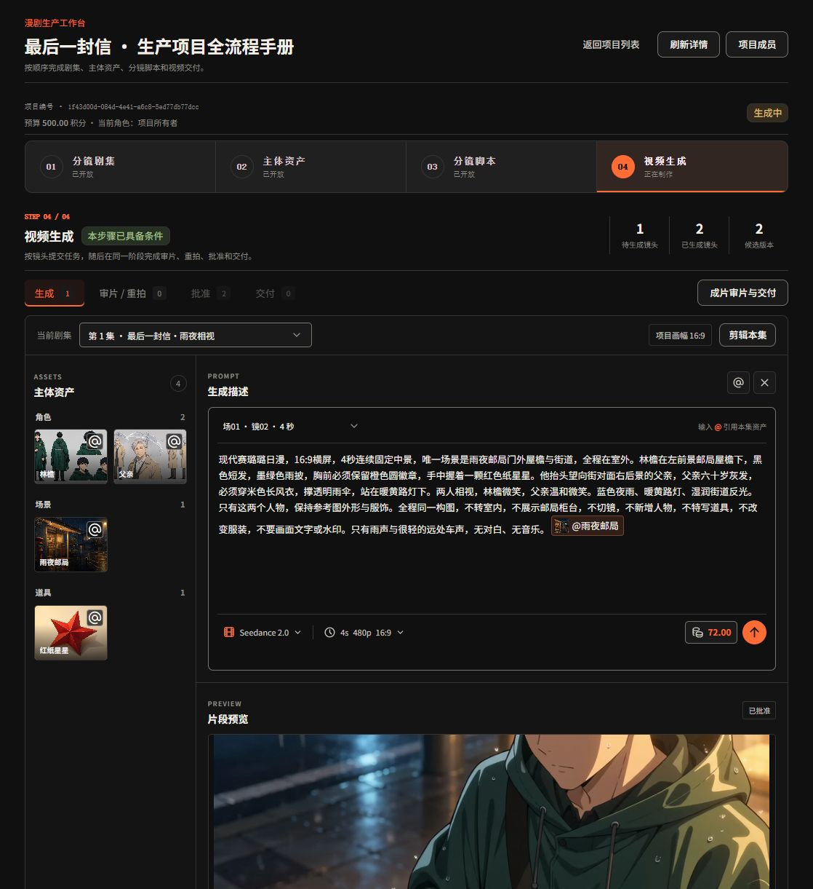
图 22 · 第二镜 V02 重写提示词后的 72.00 积分报价页面；报价需确认后才可提交。点击图片查看原图。
23预览第二镜 V02 重拍结果
逐段确认外景连续与结尾动作
V02 生成后先播放完整镜头。页面显示新候选可预览，抽帧接触表用于辅助核对从林檐持星到父亲撑伞出现、两人相视的连续画面。
- 操作入口
- “04 视频生成” → “生成” → 镜头 02 → 新候选预览
- 页面状态
- V02 · 待审片；V01 仍保留为 changesRequested。
- 抽帧检查
- 同一雨夜邮局外景、林檐绿色雨披和红纸星星、父亲米色风衣与透明雨伞。
- 确认新候选序号为版本 2 / V02，不要误选 V01。
- 从头播放到 0:04，检查镜头有没有切换到室内或新增人物。
- 复查关键动作：林檐持红纸星星、抬头看向父亲，父亲站在暖黄路灯下撑透明伞。
- 出现可接受的构图差异时，先判断是否影响叙事；未批准前仍可退回并留存意见。
- 确认候选可继续送审后，打开该 V02 的审片窗口。
本次结果：V02 保持邮局外雨夜场景，人物服装、红纸星星与透明伞符合设定；随后审片批准。父亲站位比原分镜距离更远，此偏差在审片意见中留档。
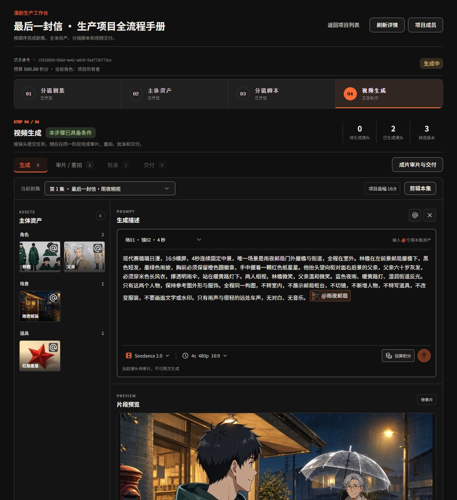
图 23 · V02 已生成，预览显示林檐与街对面撑伞父亲。点击图片查看原图。
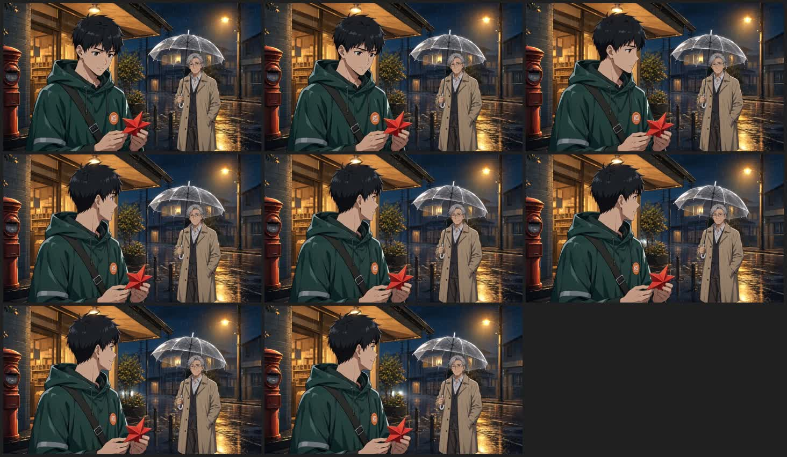
图 23A · 辅助质检图：从 V02 视频用 FFmpeg 抽帧组成的接触表，不是应用截图；用于检查画面连续性和主要人物、道具。
24审片 V02 并批准候选
记录可接受偏差后选择 V02
V02 画面连续性和角色服装符合要求，结尾相视动作可用。审片意见接受父亲站位比原分镜更远的差异，并明确选择 V02 用于剪辑；V01 继续作为退回版本保留。
- 操作入口
- “04 视频生成” → “审片 / 重拍” → 镜头 02 → 选择候选 2 / V02
- 本次意见
- V02 全段保持邮局外雨夜，人物服饰、红纸星星与透明伞保持一致，结尾相视可用。接受教学样片中父亲站位距离比原分镜远这一偏差；选择 V02 用于成片，V01 继续保留为退回版本。
- 批准后状态
- 候选 2 / V02 为 approved，第二镜可用版本已确定。
- 确认弹窗标题指向镜头 2、候选 2，播放器加载的是 V02。
- 在审片意见框填写验收结果和已接受的构图偏差。
- 点击“批准候选”，等待页面刷新。
- 在批准列表确认镜头 02 使用 V02；V01 应仍显示 changesRequested，而不是被覆盖。
成功判断：V02 显示 approved，审片意见留存；V01 保留为需重拍版本。批准只确认视频候选，不表示已剪辑、导出或完成交付。
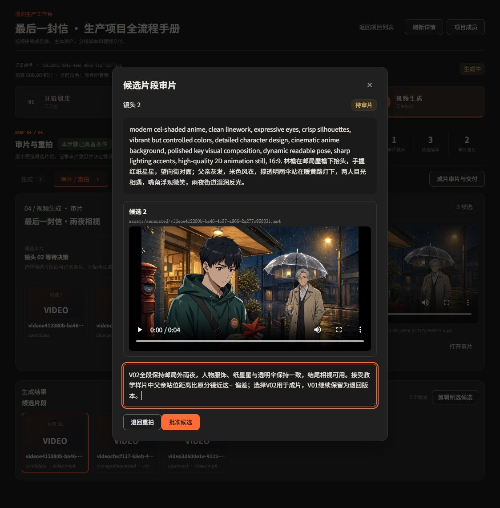
图 24 · V02 的审片弹窗，意见写明可用结果、父亲站位偏差以及选择 V02；此图为提交批准前。
25确认两个镜头各有批准候选
检查批准列表并区分退回版与可用版
批准列表应能同时追踪镜头 01 候选与镜头 02 的各次重拍结果。第二镜 V01 留档为 changesRequested；可用 V02 显示 approved。首镜也已有 approved 状态，但剪辑时需要处理其不符合设定的后段。
- 操作入口
- “04 视频生成” → “审片 / 重拍” 或“批准” → 生成候选列表
- 批准候选
- 镜头 01：V01 approved；镜头 02：V02 approved。
- 保留记录
- 镜头 02：V01 changesRequested，含场景转入室内的审片意见。
- 费用
- 本生产项目生成费用合计 228.001585 积分；含另一个演示项目后的本次授权累计 304.036068 积分，按 10 积分/元约人民币 30.40 元，低于 50 元上限。详见后续最终流水对账。
- 在候选列表核对镜头 01 有一个 approved 候选。
- 核对镜头 02 的 V02 为 approved，V01 为 changesRequested。
- 保留版本与审片意见记录，不删除退回的 V01。
- 进入剪辑前，记下镜头 01 仅取约 0–2.4/2.5 秒可用段；镜头 02 使用批准的 V02，并按项目操作继续组接、复核和导出。
当前已完成视频候选生成与审片批准，尚未完成剪辑、渲染导出或最终交付。预算显示 500.00 积分；按流水汇总的授权累计目前约 30.40 元，仍需最终对账。
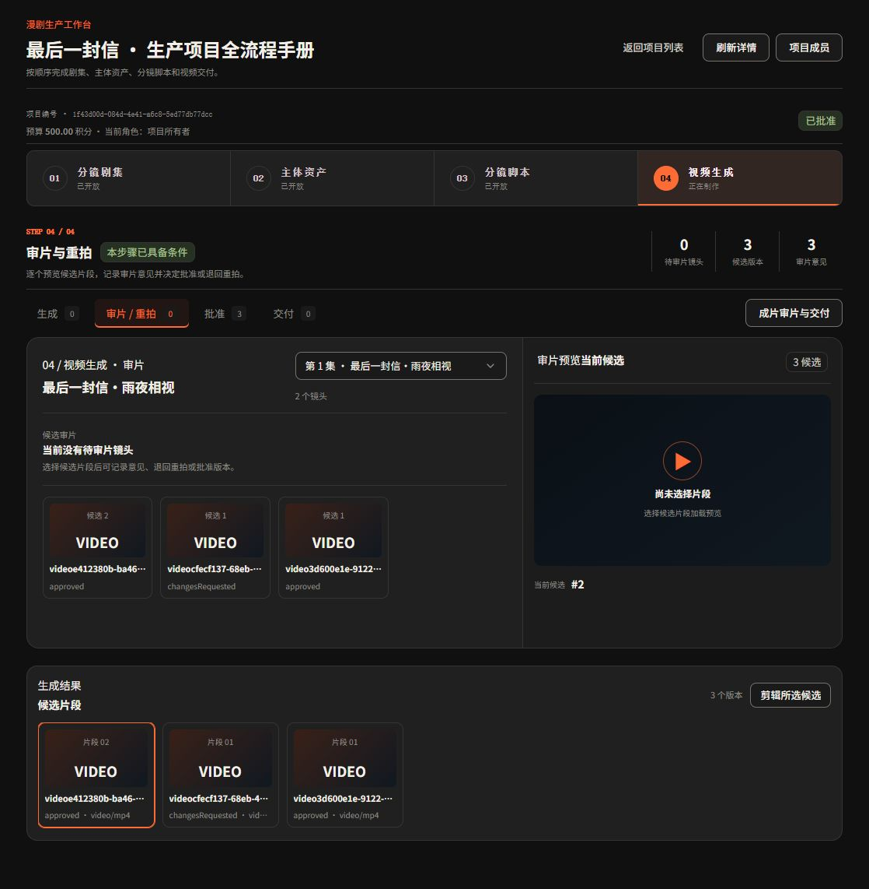
图 25 · 镜头 01、镜头 02 V02 两条批准候选与镜头 02 V01 退回记录并存。图中不代表剪辑或导出已完成。点击图片查看原图。
04 / 剪辑、导出与项目审片
步骤 26–35 · 剪辑台时间线、后台渲染与成片登记
26把批准候选导入剪辑台
在生产项目中按镜头顺序导入两个视频候选
在剪辑前确认使用已批准的镜头候选，避免把镜头 02 的退回 V01 混入成片。剪辑台提示两个项目候选已按镜头顺序加入时间线。
- 操作入口
- “04 视频生成” → 镜头候选 / 剪辑台 → 导入项目候选
- 使用版本
- 镜头 01 V01 approved；镜头 02 V02 approved。
- 媒体列表
- 2 个项目视频素材。
- 在项目候选中核对镜头 01 为 approved。
- 核对镜头 02 选择 V02；不要选已退回的 V01。
- 点击剪辑台入口，等待项目素材固定导入。
- 核对时间线按 01 → 02 排列，左侧显示 2 个视频素材。
成功判断：剪辑台显示两个项目候选，来源标记指向本项目，时间线上已有两段视频。
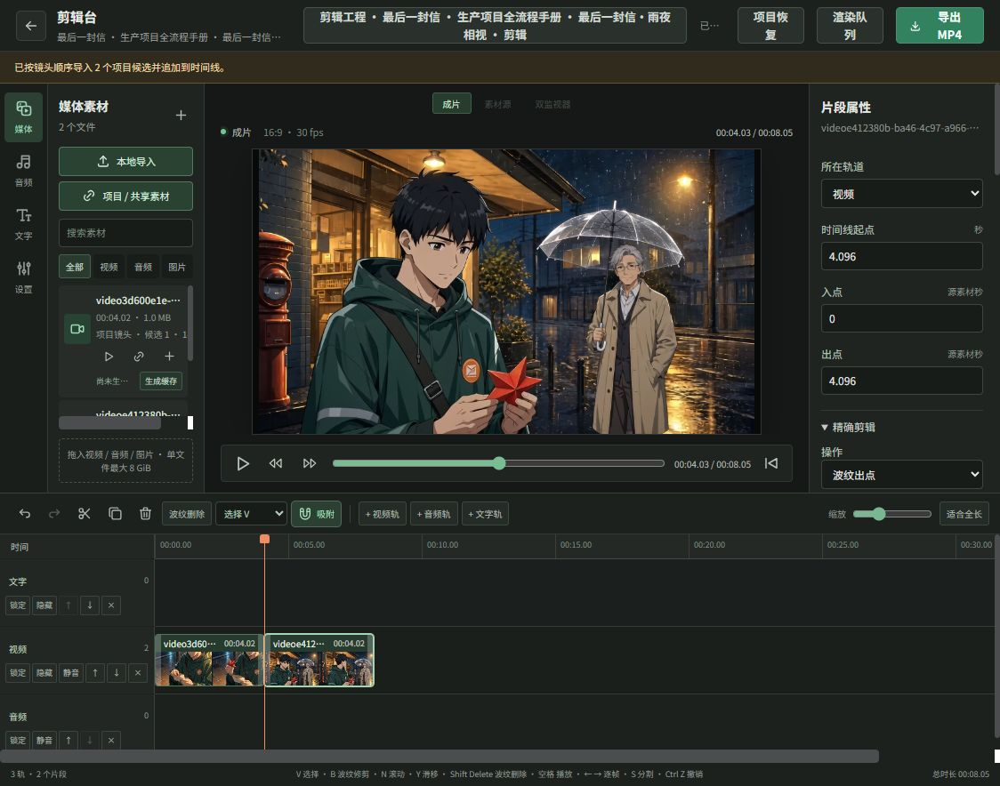
图 26 · 生产项目两个候选已固定导入，时间线出现两段视频。点击查看原图。
27按镜头顺序组接并修剪
首镜只取有效动作段，第二镜接在 2.5 秒处
镜头 01 的生成后段不符合已设定服装，时间线上只保留前段可用动作；镜头 02 从 2.5 秒开始，保留到源素材出点。剪辑只改变时间线范围，不改写生成源文件。
- 首镜选区
- 0–2.5 秒。
- 第二镜位置
- 时间线起点 2.5 秒，源入点 0 秒、出点 4.096 秒。
- 工程设置
- 16:9 · 30 fps · 当前时间线目标约 6.596 秒。
- 选中镜头 01，检查播放头和源监视器，裁到林檐取出红纸星星的可用段。
- 选中镜头 02，确认时间线起点为 2.5 秒。
- 核对两个片段首尾衔接且没有意外空隙或重叠。
- 重新运行导出预检；若当前版本仍提示源出点超出素材时长，先按提示修正再导出。
保存工程记录首段出点 2.5 秒、次段出点 4.096 秒。早期预检曾报告次段出点超限；导出校验随后改为优先读取容器时长并容忍尾差。后续 V02 已成功导出，最终媒体技术复验见步骤 36–41。
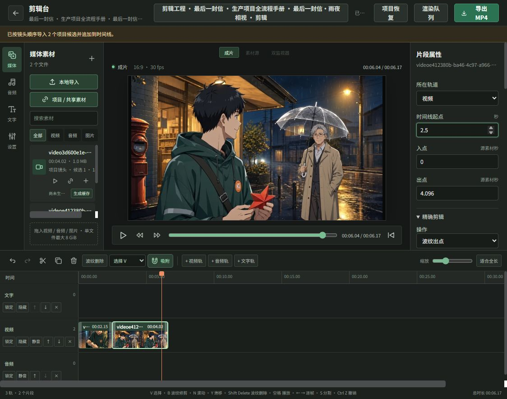
图 27 · 时间线上可见首镜剪短、第二镜从 2.5 秒开始；右侧显示选中片段的入出点。点击查看原图。
28加入两条叙事字幕
检查字幕时段与镜头切点一致
两条字幕使用 SRT 导入文字轨：第一句对应镜头 01，第二句覆盖镜头 02。检查字幕进入画面的高度、对比度和切换时点。
- 第一条
- 00:00.000–00:02.500 · 一封旧信，藏着未说出口的牵挂。
- 初版第二条
- 00:02.500–00:06.500 · 原来，你一直在等我。
- 最终字幕
- lastLetterNarrative.srt 已同步 V02，第二句结束点为 6.600 秒。
- 打开“文字与字幕”，点击“导入字幕”。
- 选择项目字幕文件，确认文字轨出现两段字幕。
- 分别预览切点前后画面，确认文字可读且不遮挡主要动作。
- 初版最后一句早于视频片尾 0.1 秒结束；后续步骤 37 已把 V02 结束点修齐至 6.600 秒。
成功判断：播放器可见对应字幕，时间线文字轨出现两段文字片段。
图 28 · 第二句字幕在监视器中可见，文字轨包含两段字幕。点击查看原图。
29设置输出参数
选择横屏 16:9、30 fps 与 1080p 输出
输出设置决定编码规格，不会提升 480p 生成素材的原生细节。以当前剪辑台设置导出 MP4 / H.264 / AAC。
- 封装与编码
- MP4 · H.264 / AAC。
- 画幅 / 帧率
- 16:9 · 30 fps。
- 输出质量
- 1080p · 标准。
- 打开左侧“设置”。
- 将画面比例设为 16:9、帧率设为 30 fps。
- 选择 1080p、标准质量。
- 重新确认当前工程没有误切换到其他画幅或工程。
成功判断：设置面板显示 16:9、30 fps、1080p、标准质量。
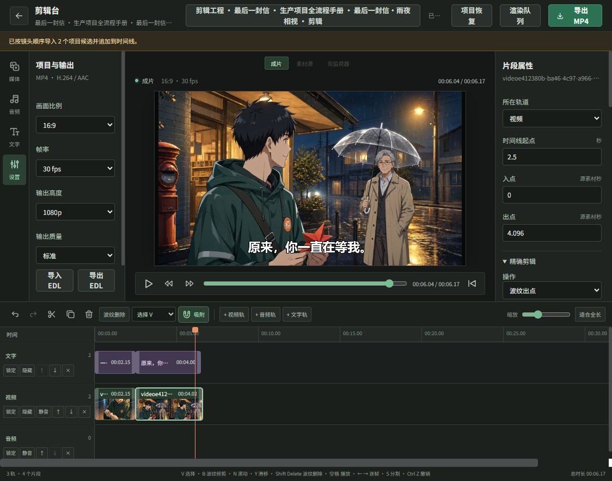
图 29 · 实际输出参数设置。素材源分辨率与导出分辨率是不同概念。点击查看原图。
30完整预览并运行预检
先播放整条时间线，再处理每条预检警告
在播放头从起点到片尾的完整预览中核对叙事、字幕、切点和尾帧。随后按当前版本执行导出预检；存在红色警告时暂停导出验收。
- 早期预检
- 截图曾显示第二镜片段出点超过素材时长；导出逻辑随后调整容器时长与尾差判断，V02 已成功导出并通过技术复验。
- V01 音量
- V01 实测 -37.9 LUFS、true peak -19.0 dBFS，声音偏轻；后续步骤 36 修订增益。
- V01 字幕
- 最后一句在 6.50 秒结束，视频流到 6.60 秒；后续步骤 37 修齐尾点。
- 从 0 秒播放到片尾，检查镜头 01 的动作取舍和镜头 02 的相视结尾。
- 在切点前后检查字幕没有缺失或过早消失。
- 点“导出 MP4”前查看预检消息。若源片段出点超过实际时长，缩短出点并重新检查时间线总长。
- 选中两个有声音的视频片段，分别使用右侧“响度校准”测量；该工具只设置恒定增益，校准后仍需重导出和重测整片。
- 只有预检无未处理警告、字幕覆盖到预定片尾且整片声音复测合格后，才把新版本送审。
历史结果：V01 响度不合格，且字幕早于片尾约 0.10 秒。本次 V02 已修订增益与字幕、成功导出并完成媒体技术复验，结果见步骤 36–41；本图不作为当前失败证据。
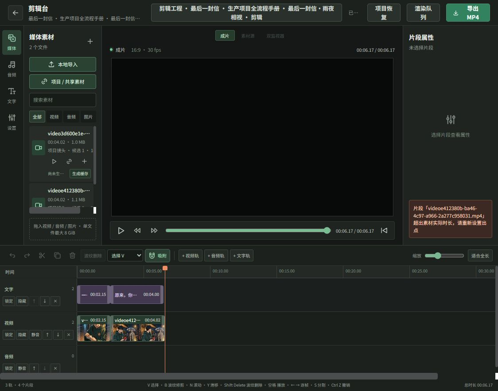
图 30 · 早期运行记录中的出点超限预检提示。导出校验逻辑此后已调整；此图记录早期问题，后续 V02 已成功导出并完成技术复验。点击图片查看原图。
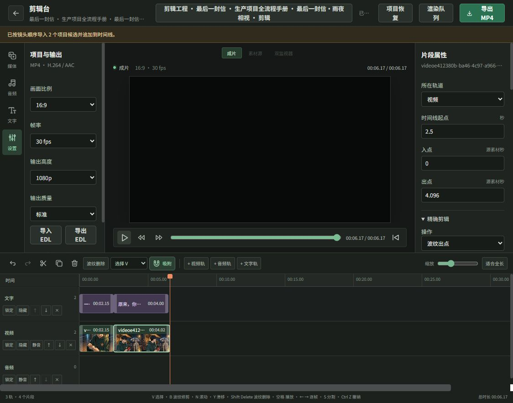
图 30A · 播放头到当前时间线末尾时监视器为黑画面；结合预检和导出媒体逐项复核片尾，不将总时长数字当作画面有效的证明。
31重新打开工程核对自动保存
重开工程后确认时间线和预览仍在
本次截图只记录工程重新打开后仍可看到片段、字幕和预览，不足以证明曾从备份列表执行恢复。此步骤用于核对已保存工程是否可继续编辑。
- 操作入口
- 剪辑台项目列表 → 打开《最后一封信》剪辑工程。
- 复核内容
- 两段项目视频、两段字幕、16:9 / 30 fps。
- 返回剪辑台项目列表，重新打开本工程。
- 等待工程载入，确认时间线显示两个镜头和两段字幕。
- 移动播放头并播放片段，确认预览可读。
- 重新检查镜头 02 的源出点和两段响度设置，再继续导出。
成功判断：工程重新打开后显示两个镜头与两段字幕，预览可读。截图没有记录备份恢复操作；该步骤不代表已执行恢复。
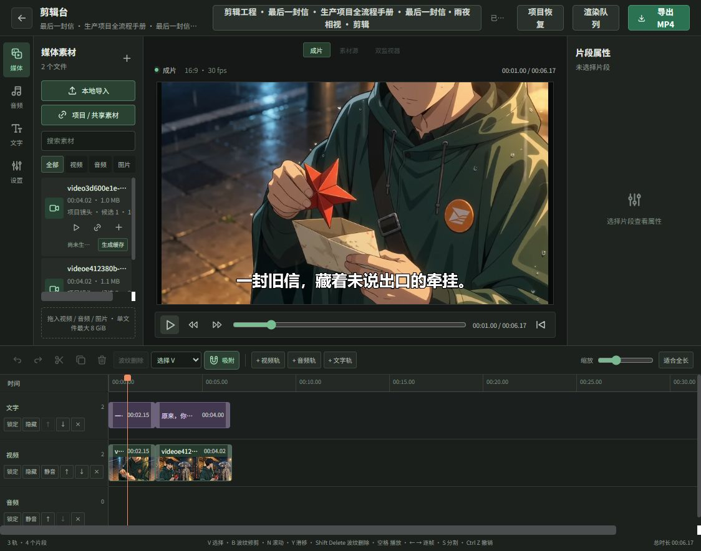
图 31 · 重开工程后可见视频预览与字幕。该截图证明工程可重新打开，不证明曾选择备份恢复。点击查看原图。
32提交后台渲染
点击“导出 MP4”并记录输出文件
后台渲染允许离开页面后继续处理。截图显示本次工程已有实际渲染输出；该输出随后进入成片登记，仍待内容与媒体质量复核。
- 操作入口
- 剪辑台顶部“导出 MP4”。
- 渲染结果
- 生成带唯一名称的 MP4 输出文件。
- 注意
- 渲染成功只说明编码任务完成，不代表字幕、响度和源时长问题已通过。
- 在完成预检修复和全片复核后点击“导出 MP4”。
- 确认弹窗内工程名、目标输出格式和任务说明。
- 提交后打开“渲染队列”，按工程名找到对应新任务。
- 等状态变为完成，再记录输出文件名。
成功判断：剪辑台输出区出现 MP4 文件名，后台队列任务完成。
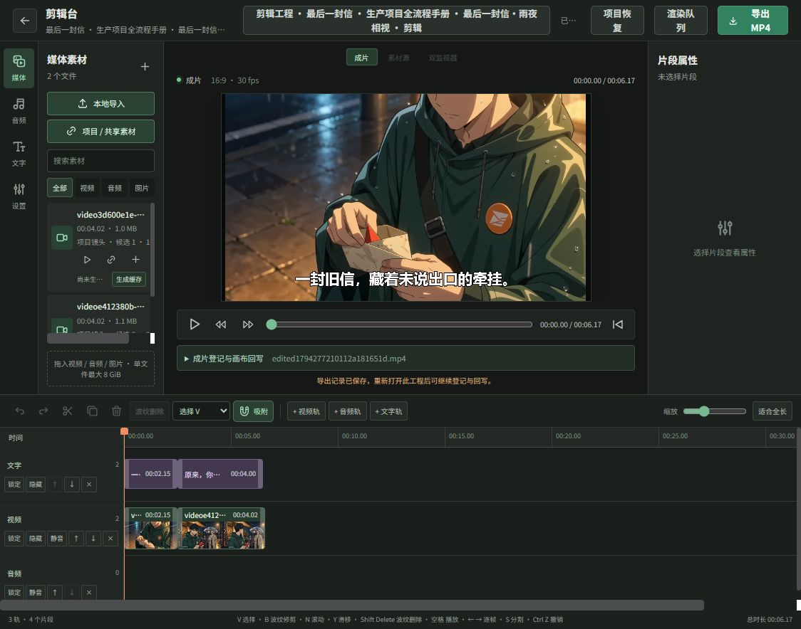
图 32 · 实际渲染输出与导出记录；不代表本次文件质量已经合格。点击查看原图。
33核对渲染队列
确认对应项目任务显示完成
渲染队列记录项目工程的输出状态。截图中有两个完成任务，后续登记时要按输出文件名对应到实际版本。
- 队列状态
- 2 个任务已完成。
- 项目
- 最后一封信 · 生产项目全流程手册 · 最后一封信·雨夜相视 · 剪辑。
- 打开“渲染队列”。
- 按完整工程名查找对应任务，不以“队列里有完成任务”代替当前工程核对。
- 记录输出文件名和任务时间。
- 播放该 MP4 并运行媒体技术检查，再送入项目审片。
成功判断：输出文件可定位，渲染任务状态为完成，文件完整可播放。
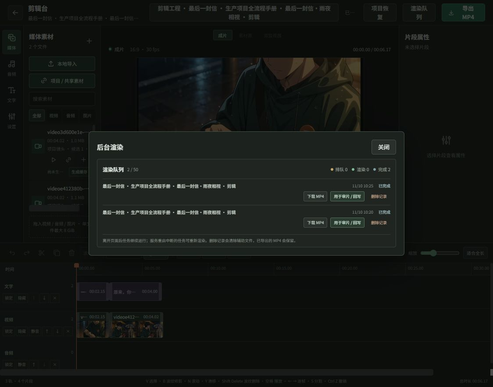
图 33 · 两条渲染任务都显示完成。完成状态只表示渲染结束。点击查看原图。
34登记成片与剧集
把对应 MP4 登记到本项目第一集
登记时绑定生产项目、剧集和成片名称，系统创建一个可审阅版本。登记动作不会自动批准成片。
- 输出文件
edited17942775188519d428e70.mp4。- 项目 / 剧集
- 最后一封信 · 生产项目全流程手册 / 第 1 集 · 最后一封信·雨夜相视。
- 成片名称
- 最后一封信_最终剪辑。
- 确认剪辑台输出区选中的是刚核对过的 MP4。
- 在“制作项目”选择《最后一封信》项目。
- 选择第 1 集，填写成片名称。
- 点击“提交到项目审片”。
成功判断：项目审片面板出现 V01，且文件名、剧集与提交时间可核对。
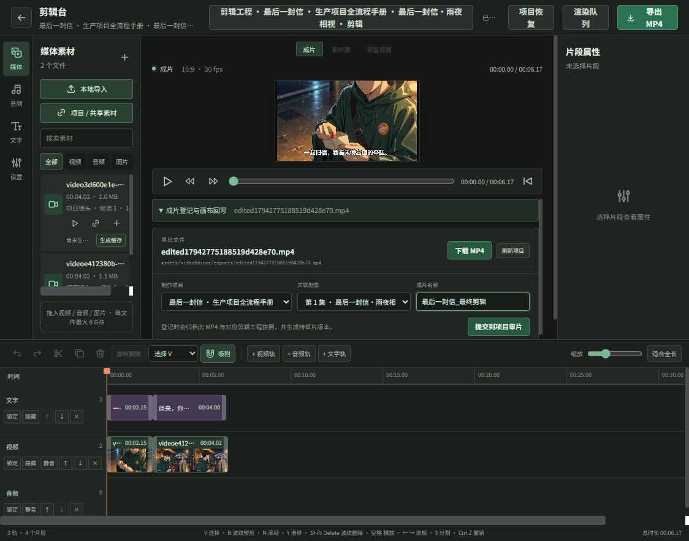
图 34 · 成片登记信息和项目 / 剧集选择。图中是点击“提交到项目审片”之前。点击查看原图。
35确认成片进入待审片
检查版本、规格、哈希和素材来源
提交后在项目“成片审片与交付”中播放 V01，并核对技术信息及来源。当前实际登记状态为“待审片”，尚未审批或确认交付。
- 版本 / 时长
- V01 · 6.60 秒。
- 画面
- 1920×1080 · 30 fps。
- 文件 SHA-256
07c098add06b84f8f5a58d5aca4ef98620bb02a983dabb451698292922fd09c3。- 来源核验
- 服务端核验 2/2 项。
- 打开项目“剪辑台成片 / 审片与交付”。
- 播放 V01，确认预览可读，检查字幕和末帧。
- 核对页面列出的时长、分辨率、帧率、SHA-256 和来源项数。
- 查看 质量报告 中的 V01 历史记录；初版未通过音量与字幕验收，不批准。继续步骤 36–41 完成 V02。
历史状态：V01 待审片且未通过质量验收，响度 -37.9 LUFS / true peak -19.0 dBFS；字幕比视频流早约 0.10 秒结束。最新 V02 已修订并技术检查通过，项目人工审片仍待处理。
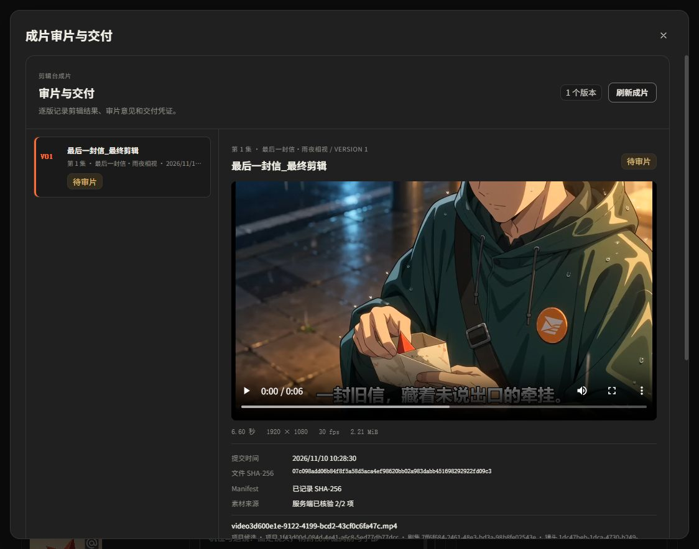
图 35 · V01 已登记并进入“待审片”；页面显示 6.60 秒、1920×1080、30 fps 和 2/2 项来源核验。待审片不等于已交付。点击查看原图。
05 / 调音修订、逐帧验收与 V02 登记
步骤 36–41 · 修正 V01 问题，验证媒体并保留人工审片
36校准两个片段的响度
逐段测量，并给峰值保留余量
V01 的音轨存在但声音很轻。本次在剪辑台逐段使用响度校准，再调整恒定增益并重新导出测量。右侧目标 -16 LUFS 是片段校准选项，不等同于整片最终响度。
- 操作入口
- 选中视频片段 → 右侧“响度校准”。
- 最终增益
- 镜头 01：+17.8 dB；镜头 02：+21.2 dB。
- 整片复测
- -18.3 LUFS · LRA 2.4 LU · true peak -1.2 dBFS。
- 选中镜头 01 视频片段，展开右侧“响度校准”。
- 点击“测量并校准片段”，等测量结束；检查增益而非反复点击。
- 选中镜头 02 执行同样操作，核对本次增益为 +21.2 dB；首段最终设为 +17.8 dB。
- 预览切点附近的声音；随后重新导出并测量整片，不能仅凭右侧 -16 LUFS 选项判定达标。
成功判断：两个片段保存各自增益；V02 实测声音已提升，整片真峰值仍低于 -1 dBFS。本例未声称完成整片动态响度标准化。
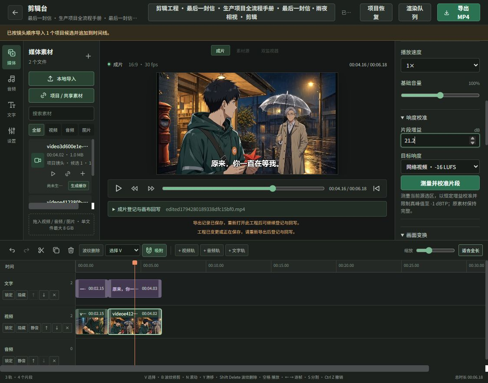
图 36 · 第二段片段增益为 +21.2 dB。画面停在片段中部，该图用于核对调音参数，不作为全片已播放完的证据。
37预览最后有效帧与字幕
把第二句字幕延长至 6.60 秒
V01 第二句在 6.50 秒结束。修订时选中第二条文字片段，把源出点改为 4.10 秒；它从时间线 2.50 秒开始，因此尾点变为 6.60 秒。保存后重新预览切点与片尾。
- 操作入口
- 文字轨 → 第二条字幕 → 右侧“出点”。
- 最终范围
- 第一句 0–2.50 秒；第二句 2.50–6.60 秒。
- 帧数显示
- 30 fps 下 00:06.17 是 6 秒 17 帧，约 6.567 秒；总长 00:06.18 即 6.60 秒。
- 点击文字轨第二条“原来，你一直在等我。”。
- 把出点设为 4.10 秒，保持时间线起点 2.50 秒。
- 等工程保存完成，从头预览两镜及字幕切换。
- 把播放头移到片尾前一帧，确认第二句仍可见；到达总时长后的空监视器不用于判断导出黑尾。
成功判断：最后有效帧可见第二句字幕，文字轨尾点对齐总长。配套 SRT 的结束点同步为 00:00:06,600。
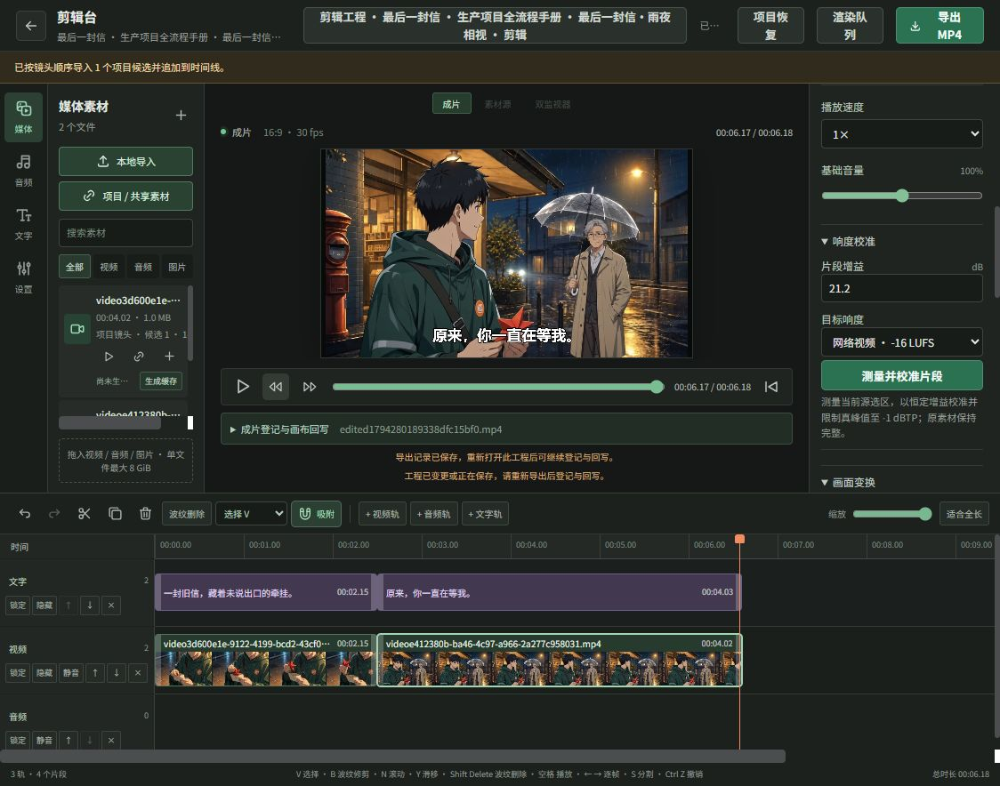
图 37 · 片尾前一帧预览，第二句字幕仍在画面内；文字轨与视频轨末端对齐。时间码按“秒.帧”阅读。
38导出 V02 并检查队列
调音与字幕改动后重新渲染
工程改动后，旧导出结果不会自动变化。重新点击“导出 MP4”，再在后台渲染队列中选取对应最新结果；标记为旧版本的结果只留作历史。
- 操作入口
- 右上角“导出 MP4” → “渲染队列”。
- 最终输出
edited1794280411002f1e5116a.mp4。- 归档结果
- 6.60 秒，2,318,970 字节。
- 核对两段增益与第二字幕尾点，等待保存完成。
- 点击“导出 MP4”，提交新渲染任务并等待完成。
- 打开渲染队列，核对工程名与本次时间；不要选择标记“此结果来自旧版本”的任务。
- 使用最新完成任务的“用于审片 / 回写”，并核对输出文件名后继续登记。
成功判断：最新任务显示已完成，最终选择的文件名与 V02 技术报告一致。队列完成只表示渲染结束，仍需下一步验收。
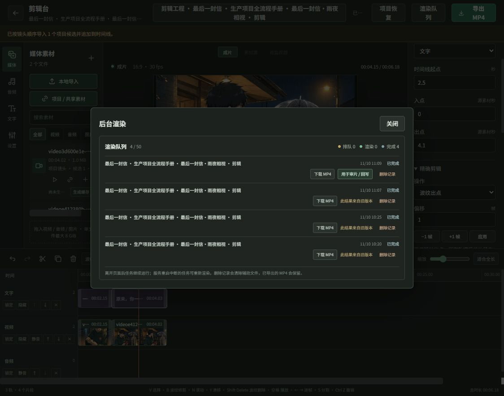
图 38 · 本轮调音修订过程中的队列：顶部任务可用于审片 / 回写，下方旧任务有旧版本提示。该图说明结果选择方法；最终文件名以本步列出的 V02 归档文件为准。
39逐帧核对镜头与字幕
检查首镜动作、2.50 秒切点和最后有效帧
先在剪辑台拖动播放头检查，再从最终 MP4 抽取关键帧交叉核对。抽帧图是媒体验收辅助图，不能冒充应用操作截图。
- 检查时间
- 0.50、2.40、2.50、3.50、6.30、6.567 秒。
- 检查重点
- 拆信取星、镜头衔接、父亲外观、第二句字幕与末帧。
- 查看 0.50 秒与 2.40 秒，确认首镜保留取星动作且字幕可读。
- 检查 2.50 秒的切点，确认镜头转为雨夜双人画面且字幕同步切换。
- 检查 3.50 秒至片尾，确认父亲米色风衣、透明伞与雨夜场景。
- 核对最后解码帧约 6.567 秒仍有画面与第二句字幕。
成功判断：V02 抽样帧包含两个预定镜头，末帧字幕可见；无以空监视器截图替代实际成片检查的推断。
图 39 · 剪辑台在末帧前的核对位置。下图来自同一最终 MP4 的抽帧检查。
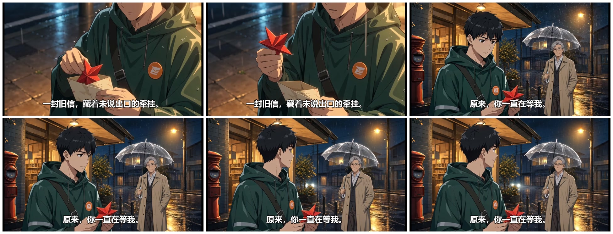
图 39A · FFmpeg 辅助质检图，不是应用截图；从左到右、从上到下为 0.50、2.40、2.50、3.50、6.30、6.567 秒。
40用 FFmpeg 验收媒体
对最终导出文件检查编码、解码、黑场与响度
本步是制作验收操作：以最终输出文件执行 FFprobe，再对全片进行严格解码、黑场和 EBU R128 响度检测，并计算 SHA-256。只检查导出界面的完成状态不足以覆盖这些项目。
- 画面 / 音频
- H.264 High · 1920×1080 · 30 fps · 198 帧；AAC-LC · 48 kHz · 双声道。
- 时长
- 视频流、音频流、容器均为 6.600 秒。
- 响度
- -18.3 LUFS · LRA 2.4 LU · true peak -1.2 dBFS。
- SHA-256
F48EFE17FB1B7C4057F24551C5F8300BE379A8E457D8E14B5FDDF867F120F56B。
- 对
edited1794280411002f1e5116a.mp4 执行 FFprobe，核对画面、音频、帧数和 6.60 秒时长。 - 使用 FFmpeg 严格完整解码：
-v error -xerror -i 视频文件 -f null NUL；本次退出码为 0。 - 以
blackdetect=d=0.05:pix_th=0.1 检查黑场；本次未报告黑场区间。 - 以
ebur128=peak=true 测量整片，记录综合响度、LRA 和真峰值。 - 计算文件 SHA-256，与项目登记页面逐字符对应；读取 V02 质量报告。
成功判断：全片解码通过、无报告黑场、最后有效帧字幕可见、哈希匹配。技术检查已通过；主观听感、内容审批与项目正式交付仍需人工确认。
图 40 · 最终 V02 的媒体验收辅助图。编码、响度、全片解码和哈希的实测值见本步及 JSON 报告；此图不冒充终端输出截图。
41登记 V02 并保留待审片状态
新版本与 V01 历史并存，等待项目人工审片
选择经过技术检查的新文件提交到本项目第 1 集，系统生成 V02。本轮保留“待审片”，没有替项目负责人批准或确认交付。
- 操作入口
- 剪辑台最新导出 → 用于审片 / 回写 → 提交到项目审片。
- 项目 / 剧集
- 最后一封信 · 生产项目全流程手册 / 第 1 集 · 最后一封信·雨夜相视。
- 登记名称
- 最后一封信_最终剪辑_V02。
- 当前状态
- 2 个版本，V02 待审片，来源服务端核验 2/2 项。
- 在最新输出的成片登记区选择本项目与第 1 集，填写 V02 名称。
- 点击“提交到项目审片”，等待登记成功。
- 打开“成片审片与交付”，选择左侧 V02，核对 6.60 秒、1920×1080、30 fps 与文件 SHA-256。
- 播放 V02 并把技术报告交给审片人；保留 V01 历史。
- 由项目审片人确认内容与听感后再审批、交付。本轮状态保持待审片。
实际结果：V02 已登记且来源核验 2/2；技术检查通过，项目人工审片待处理，未批准、未正式交付。
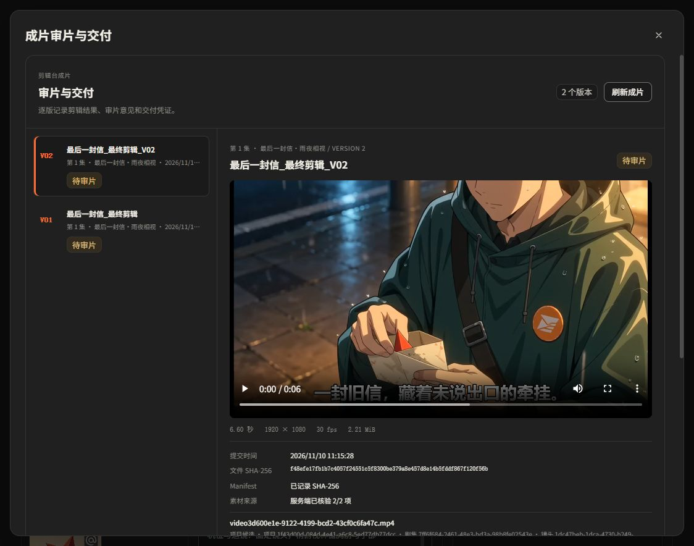
图 41 · V02 已登记为待审片，V01 历史仍在。页面显示 6.60 秒、1920×1080、30 fps、文件 SHA-256 与来源核验 2/2 项。
本轮实际进度与验收状态
从主页生产项目完成剧本、两镜分镜、角色 / 场景 / 道具参考图、两条批准候选、剪辑及 V02 登记。V02 时间线为 0–2.5 秒和 2.5–6.6 秒；两片段增益分别为 +17.8 dB 与 +21.2 dB。FFmpeg 全片解码、FFprobe、黑场检测、字幕抽帧和 EBU R128 检查通过；综合响度 -18.3 LUFS、LRA 2.4 LU、true peak -1.2 dBFS。视频 SHA-256 为 F48EFE17FB1B7C4057F24551C5F8300BE379A8E457D8E14B5FDDF867F120F56B，文件 2,318,970 字节。已登记为 V02“待审片”；项目人工审批未完成，尚未正式交付。V01 的低响度与片尾字幕提前结束作为历史保留。两次授权演示合计 304.036068 积分，约 ¥30.40，低于 ¥50 上限。
没有找到匹配步骤。